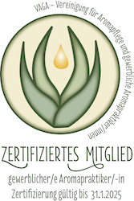
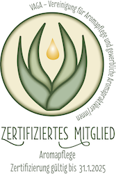

Tauchen Sie ein in ein duftende Reich der Blüten, Blätter, Früchten, Gräser, Harzen, Hölzern, Samen und Wurzeln!
Schon lange beschäftigt sich der Mensch mit dem Duft und der Wirkung von Blüten, Blätter,
Früchten, Gräser, Harzen, Hölzern, Samen
und Wurzeln, was alte Bücher und Ausgrabungen
bestätigen. Zahlreiche Studien, die in der heutigen Zeit eingefordert werden, belegen
auch die therapeutische Wirksamkeit.
Unterschiedliche Methoden (Destillation, Extraktion, Pressung,...) ermöglichen die Gewinnung ätherischer Öle, Absolues und Extrakte.
Die geballte Kraft der teilweis über 400 Inhaltsstoffen dieser fettlöslichen Substanzen in jedem Tropfen kann eingesetzt werden, um Gesundheit zu unterstützen,
Krankheiten zu lindern und Wohlbefinden zu erlangen.
Atmet man einen Duft aus der Raumluft
durch die Nase ein, gelangt dieser direkt ins Limbische System.
Das Zentrum, wo u.a. Gefühle gesteuert und verarbeitet werden.
Verschiedene Erinnerungen und Emotionen, die man mit dem Duft verbindet, werden ausgelöst.
Ein bekanntes Beispiel ist wohl der Lavendel. Die einen lieben ihn, die anderen überhaupt nicht.
In die Atemluft gelangt das ätherische Öl z.B. mittels Aromalampe, Diffusor, Spray oder beim Sauna-Aufguss. ♨︎
Aufgetragen auf die Haut
entfalten ätherische Öle ihre Wirkung, indem sie in den Stoffwechselvorgang des Menschen gelangen.
Diese können einem Körperöl, Duschgel oder Badeöl zugesetzt sein. Aber auch durch das Anlegen von Wickel und Kompresse ist diese wohltuende Anwendung möglich.
Die Einsatzmöglichkeiten
der ätherischen Öle reichen von A wie aufmunternd, aphrodisierend über E
wie entspannend, erfrischend, entzündungshemmend
, hin zum H wie harmonisierend
bis schließlich zum Z wie zentrierend.
Fast zu jedem Buchstaben findet man ein Wort, mit dem man die Eigenschaften der ätherischen Öle beschreiben kann.
So vielfältig wie die unzähligen Inhaltsstoffe.
Um die Wirkung auf Körper, Geist und Seele in vollen Zügen genießen zu können, ist bei der
Menge an benötigtem Pflanzenmaterial (für 1 kg Melissenöl werden bis zu 8000 kg Blätter destilliert) auch an
Kontraindikationen und Vorsichtsgebote zu denken, damit es zu keinen
unerwünschten Nebenwirkungen kommt.
Aus Früchten, Kernen, Nüssen, Pflanzen und Samen werden mittels Pressung oder Mazeration fette Öle (z.B. Johanniskraut- Mohnblütenmazerat, Hanfsamen-, Kokos-, Mandel-, Sanddorn-, Schwarzkümmel-, Sesam-, Wildrosenöl) und Wachse (Jojoba) gewonnen. Dabei ist auf eine schonende Verarbeitung zu achten, um möglichst viele Wirkstoffe im Öl zu erhalten.

Die besonders hautfreundlichen Eigenschaften sind bei der Gesichts- und Körperpflege eine Wohltat.
Je nach Wirkstoffzusammensetzung gibt es für jeden Hauttyp das passende Öl.
Auch die Verwendung hochwertiger Pflanzenöle in der Küche oder die pure Anwendung bei einer Ölkur sind empfehlenswert.
Zu beachten sind die verschiedenen Anwendungsmöglichkeiten, da sich nicht jedes Öl/Wachs für alle Bereiche eignet!
Eine wundervolle Wirkung haben Hydrolate. Lange als "Nebenprodukt" bei der Herstellung von ätherischen Ölen bezeichnet,
gewinnen diese immer mehr an Bedeutung.
Die in den Destillaten enthaltenen flüchtigen, wasserlöslichen Substanzen von Blüten, Blätter und Kraut (Lavendel, Melisse, Orangenblüte, Pfefferminze, Rose, Rosmarin)
sowie Hölzer (Palo Santo, Zirbe), Harzen (Weihrauch) oder Wurzeln (Angelikawurzel), sind besonders
mild und hautverträgllich. Da sich nur geringe Spuren von ätherischen Ölen in einem Hydrolat
befinden, brauchen diese bei der Anwendung nicht verdünnt werden.

Sie finden Verwendung in Körperpflegeprodukten
, als zarte Raumbeduftung
oder als Erfrischung direkt auf die Haut gesprüht. Ebenso finden sie Einsatz in der
Aromaküche: Getränke, Süßspeisen und pikante Speisen können mit passenden Hydrolaten
aufgepeppt werden und erhalten dadurch eine spezielle Note.
Beim Erwerb von Ätherischen Ölen, Hydrolaten sowie Pflanzenölen ist es ein Qualitätsmerkmal, wenn bestimmte Hinweise
am Etikett ersichtlich sind, u.a.:
Deutscher und Botanischer Name, Herkunftsland, Pflanzenteil, Gewinnungsart (siehe oben),
Verwendungszweck, Chargennummer, Füllmenge und Gefahrenhinweise.
Zusätzliche Angaben beim ätherischen Öl:
100% naturreines ätherisches Öl oder die % Verdünnung mit Jojoba/Ethanol,
wenn vorhanden der Chemotyp (selbe Pflanze, unterschiedliche Inhaltssoffe) sowie
je nach Deklaration Gefahrenpiktogramme (Bedarfsgegenstand) oder Verdünnungshinweise (Kosmetika, Lebensmittel).
Pflanzenöle
mit dem Vermerk "nativ" sind hochwertiger als durch Raffination gewonnene Öle.
Hydrolate
sollten, wenn möglich, ohne Konservierung angeboten werden.

Ablaufdatum/Haltbarkeit: Nicht jede Firma kennzeichnet diese aus, außer der Inhalt ist
für kosmetische Zwecke deklariert. Zu beachten wäre jedenfalls,
dass ätherische Öle nach dem Öffnen, je nach biochemischer Zusammensetztung, unterschiedlich
lange haltbar sind. Bedingt durch die Entnahme jedes Tropfens, kommt stattdessen Sauerstoff
in das Fläschen und das Öl beginnt zu reagieren.
Zitrusöle, Nadelöle verändern z.B. mit der Zeit Ihr Duftverhalten. Ein Verbrauch innerhalb von 1 1/2 Jahren wäre empfehlenswert.
Danach sind sie jedoch noch zur Entfernung von Kleberesten gut zu gebrauchen. Besonders Teebaumöl
hat die Eigenschaft, nach dem Öffnen rasch zu oxidieren und sollte stets frisch zur Anwendung kommen! Holz- und Blütenöle sind
wiederum sehr lange haltbar und werden teilweise mit der Zeit sogar intensiver/(wert)voller.
Bei der Lagerung sind Temperaturschwankungen zu vermeiden, dunkle Flaschen mit
Sicherheitsverschlüssen (oder bei Hydrolaten ein Sprühaufsatz) sind Klarglasflaschen/Kunststoffflaschen vorzuziehen.
Allgemeines: Verarbeitete Rohstoffe in Bio Qualität sind empfehlenswerter, da diese
im Kreislauf der Natur heranwachsen dürfen und somit die gewünschte Balance bereits in sich tragen: natürliche
Entwicklung von Stoffen, die Nützlige anlocken und Fressfeinde abwehren. Damit schließt sich der Kreis!

Im Beratungsgespräch können Sie an Lieblingsdüften schnuppern und neue Duftrichtungen kennenlernen.
Ebenso werden passende Hydrolate
und Pflanzenöle vorgestellt.
Um Kontraindikationen & Vorsichtsgebote berücksichtigen zu können, findet bei der ersten Beratung ein ausführliches Gespräch statt.
Je nach Duftvorliebe und anstehenden persönlichen Themen entsteht eine Rezeptur,
die für Sie zum Mitnehmen in einem Riechstift gemischt wird.
Im Feedback Gespräch wird Ihr Allgemeinbefinden evaluiert, bei Bedarf die individuelle Mischung
abgeändert oder auf Wunsch nachproduziert. Für diese Wohlfühlmischung erhalten Sie
eigens erstellte Unterlagen mit Anwendungsmöglichkeiten für den Alltag.
Ziele meiner Beratung: Mit Ihrer duftenden Begleitung erlangen Sie Wohlbefinden und fühlen sich in der aktuellen
Lebensphase energetisch und körperlich ausgeglichen.
Preis inklusiv Riechstift mit der erstellen Mischung und Feedback nach ca 3 Wochen,
welches in der Praxis oder telefonisch stattfindet
zzgl. Kosten für die Nachproduktion der Individuellen Mischung

Beim Rhythmischen Körperbalancing findet die Anwendung im Bereich von Rücken & Nacken ODER Unterarme & Hände ODER
Unterschenkel & Füße statt. Dieses kann im Sitzen oder Liegen durchgeführt werden. Wiederkehrende rhythmische Streichungen
führen zu einem tiefen Gefühl der Entspannung, Blockaden können gelöst werden.
Die Ganzkörperanwendung wird im Liegen an Rücken, Armen und Beinen, sowie im Gesicht ausgeführt.
Ausgleichende und harmonische Einreibungen/Streichungen führen zu einer energetischen & körperlichen Ausgewogenheit.
Als unterstützende Maßnahme bei einer Entgiftungskur oder während einer Erholungszeit, bieten sich
Wickel, Auflagen & Kompressen an. Die Erstanwendung findet in der Praxis statt.
Anschließend erhalten Sie Tipps, damit eine regelmäßige Anwendung auch bei Ihnen zu Hause durchführbar ist.
Passende hilfreiche Utensilien kommen bei mir in der Praxis zum Einsatz.
In einem Erstgespräch, Dauer 10 - 15 Minuten, werden Fragen zur Behandlungsmethode,
Ist-Zustand sowie das Ziel einer Körperanwendung besprochen. Danach können Sie eine
Mischung aus Pflanzenölen & ätherischen Ölen wählen, die gerade zu Ihren Bedürfnissen passt.
Diese wird anschließend auf die entsprechenden Hautareale aufgetragen.
Zur gegönnten Wohlfühlzeit sollten anschließend 5-10 Minuten eingeplant werden, damit die
Anwendung nachwirken kann.
25 Minuten
50 Minuten
60 Minuten
Anmerkung: Die Durchführung einer Körperanwendung erfolgt ausschließlich auf intakter, gesunder Haut!


Ein individuell erstelltes Naturparfum ist Einzigartig.
Ob mit feniminen, maskulinen, blumigen, würzigen oder orientalischen Charakter, vieles ist möglich.
Um eine gelungene Duftkomposition zu erhalten, unterstütze ich Sie beim Wählen aus
einer Vielzahl von Essenzen.
Aufeinander abgestimmte Akkorde ergeben eine ausgewogene Zusammenstellung, deren Duftrichtung Sie vorgeben.
Nach einer Reifezeit von ca. 3 Wochen kann die Komposition dann zu einem
EdP, EdT, EdC, Ölparfum, Creme de Parfum oder Aftershafe verarbeitet werden.
Ebenso ist es möglich ein Körperöl
oder eine Duschbasis damit zu beduften.
Mein Bestreben ist es, einen Duft zu kreieren, mit dem Sie sich gerne umgeben
und der Ihre Persönlichkeit unterstreicht.
Preis inklusiv Nachbesprechung
zzgl. Materialkosten, die sich nach den verwendeten Rohstoffe und Leerbehälter richten

Das DIY-Produkt
rund um ätherische Öle, Hydrolate und Pflanzenöle richtet sich nach Ihren persönlichen Wünschen & Interessen.
Duftmischungen mit ätherischen Ölen, ein Naturparum oder
Salbe, Lippen-Balsam, Creme, Körperöl - Sie entscheiden, was produziert wird!
Unter Anleitung wird gemischt, gerührt und das fertige Produkt kann mit nach Hause genommen werden.
Sie erhalten ein Skriptum mit einer Beschreibung der verwendeten Zutaten,
Verarbeitungshinweise und dem Rezept des erzeugten Produktes.
Damit kann es zu Hause für den Eigengebrauch jederzeit nachgerührt werden.
Damit bestimmen Sie was hineinkommt, um Ihre Duftvorliebe zu fördern und Unverträglichkeiten zu minimieren.
Ob für Sie alleine, zu zweit oder in der Kleingruppe bis maximal 4 Personen,
ich freue mich auf Ihre Anfrage und werde mich bemühen, ihre Wünsche umsetzen zu können.
Da ich das Skriptum stets passend zum Thema individuell zusammenstelle und die benötigten Rohstoffe nicht auf Vorrat lagern, sondern frisch bestellt werden, ist mit ca. 3-4 Wochen Vorbereitungszeit zu rechen!
Preis inklusive Skriptum
zzgl. Materialkosten, je nach verwendeten Rohstoffe und Leerbehälter

Ein Duft hinterlässt Erinnerungen, die unmittelbar mit Gefühlen, Erlebnissen und Bildern verknüpft sind.
Raumbeduftung für Praxis/Büro:
- Raumluftreinigende und -harmonisierende Duftmischungen schaffen eine angenehme, frische Atmosphäre
- Von ätherischen Ölen, welche die Aufmerksamkeit erhöhen und ein konstruktives Raumklima schaffen, profitieren Ihre Mitarbeiter
Firmenduft:
- Ergänzen Sie Ihr Logo mit einem speziellen Duft, der Ihre Firmenphilosophie unterstreicht
- Damit können u.a. Visitenkarten, Flyer oder auch Ihr Messestand bei Veranstaltungen beduftet werden
Hochzeitsduft:
- Ihr besonderes Ereignis bekommt eine besondere Erinnerung, wenn auch die Nase miteinbezogen wird
- Der exklusive Duft wird mit dem Brautpaar gemeinsam kreiert
- Exklusive DuftGeschenke können Sie im Rahmen einen Workshops als Giveaways mit Ihrer individuellen Duftkomposition für Ihre Gäste erstellen, damit diese sich auch noch später an diesen besonderen Tag erinnern können
Gerne unterstütze ich Sie beim Entdecken der passenden ätherische Öle, um einen individuellen Duft für Ihre speziellen Bedürfnisse zu kreieren.
Auf Wunsch kann ein Beduftungskonzept erstellt werden.
Bei Anreise: Verrechnung des amtlichen Kilometergeldes


Begegnen Sie der wunderbaren Kraft der Pflanzendüfte auf Ihrer persönlichen DuftSpur.
So wie die Pflanze unterschiedliche Lebensbedingungen vorfindet und ständig mit ihrem Umfeld
kommuniziert (Anlocken von Nützlingen, Abwehr von Schädlingen,...), so vielfältig
können auch unsere Reaktionen auf den Duft einer Pflanze sein, denn auch wir machen
unterschiedliche Erfahrungen, die mit Düften verknüpft sind:
- Zimt kann Gefühle von weihnachtlicher Stimmung erwecken oder lässt an einen selbstgemachten Apfelstrudel denken
- Lavendel erinnert vielleicht an ein Säckchen, welches entweder im Kasten hängt um Motten fernzuhalten oder als Duftimpuls neben dem Kopfpolster seinen Platz findet
Erinnerungen sind abgespeichert, die bei bewussten oder unbewussten Wahrnehmen Reaktionen
auslösen - Duft & Psyche treten in Kommunikation!
Sie erhalten während des Coachings Duftimpulse gereicht. Dabei spielt es keine Rolle zu
erkennen, welche Pflanze dahintersteckt. Es zählt lediglich Ihre Wahrnehmung, Empfindung
& Reaktion darauf.
Ich unterstütze Sie beim Entdecken Ihres Duftes/Ihrer Duftmischung, diese darf wiederum
in der folgenden Zeit Ihr Begleiter in Form eines Riechstiftes sein, wann immer Sie an Ihrem
selbstbestimmten Ziel beim Coaching erinnert werden wollen.
Wenn Sie neugierig sind, welche Stationen Sie auf Ihrer Reise noch erwarten könnten, ist ein
Duftcoaching eine Möglichkeit, diese aufzuzeigen.
Es handelt sich dabei weder um eine psychologische oder psychotherapeutischer Behandlung, noch ersetzt diese.
Preis inklusiv Riechstift und Feedback nach ca 3 Wochen, welches in der Praxis oder telefonisch stattfindet
zzgl. Kosten für Leerbehältnisse und Rohstoffe für weitere Anwendungsmöglichkeiten
Ein Elfendüfte-Choaching via Skype wäre auch möglich. Dafür ist aus organisatorischen Gründen mit einer Vorbereitungszeit von mindestens einer Woche zu rechnen. Der genaue Ablauf einer Beratung wird bei Terminvergabe besprochen.

Überraschen Sie Ihre Liebsten mit einer dufterfüllten Auszeit in meiner Praxis.
Eine besondere Aufmerksamkeit, passend zu einem besonderen Anlaß oder einfach so, um Freude zu bereiten.
Momente zum Genießen, Wohlfühlen, Entspannen, Entschleunigen, Verwöhnen lassen.
Auf Wunsch kann der Gutschein auch mit einer persönlichen Widmung als Geschenk von mir versendet werden.
zzgl. Verpackungs- und Versandspesen von 5 € (entfallen bei einem Gutscheinwert ab 50 €)

Die Zusatzausbildung Komplementäre Pflege - Aromapflege befähigt mich zusätzlich, Wickel, Auflagen & Kompressen in meiner Praxis anzulegen.
Weitere Leistungen, um duftende Wohlfühlmomente in Ihr Leben zu bringen: Naturparfum, Workshop, Duftmarketing & AirDesign, Elfendüfte-Coaching sowie Gutscheine

Es sind Produkte, mit denen ich gute Erfahrungen gemacht habe und von deren Wirkung ich überzeugt bin.
Vielleicht inspiriere ich damit auch den einen oder anderen, die so wie ich Wert auf heimische Betriebe, Produkte und Nachhaltigkeit legen!
In meiner Praxis ist nur Barzahlung möglich. Bei einer Gutscheinbestellung erfolgt die Zahlung mittels Überweisung. Die Rechnung ist aufgrund der Kleinunternehmerregelung umsatzsteuerfrei!
 Sabine Krenn
Sabine Krenn
Seit vielen Jahren bin ich als
Dipl. Gesundheits- und Krankenpflegerin in verschiedensten Einrichtungen und Richtungen tätig.
Schon immer intressierten mich Möglichkeiten, den Pflegealltag mit allen Sinnen 👀👂🏻👃🏻👅👐🏻 erlebbar zu machen.
Das Verfassen einer Fachbereichsarbeit im Rahmen der Ausbildung zur
Dipl. Aromapraktikerin/Aromapflege veranlasste mich zu reflektieren, wann ich den ersten
„Kontakt“ mit ätherischen Ölen hatte und was sich daraus entwickelte:
Mitte 1997 erwarb ich so ein schönes Fläschchen, dessen Duftmischung mir gefiel. Es nannte sich "Inspiration"!
Das erste Eintauchen ins Reich der naturreinen Düfte begann, ich wurde immer neugieriger und begann zu hinterfragen,
was da denn alles so drin sei und warum es so duftet wie es duftet. Ausbildungen begannen, Bücher um Bücher folgten.
Aber nicht nur neue Literatur füllt mein Regal. Auch vergangenes Wissen in antiquarischen Büchern finde ich sehr spannend,
vor allem im Kontext zu heutigen Studien!💡
Bei meinen Körperpflegeprodukten achte ich sehr auf die verwendeten Inhaltsstoffe.
Parfums, Körperöle und Gesichtspflege mische und rühre ich selbst zusammen.
Damit kann ich bei den Zutaten bestimmen, was rein darf und was nicht.
Wenn mir geeignetes Rohstoffe zur Verfügung steht, setze ich damit auch Mazerate an oder
destilliere duftende Pflanzenwässerchen.

Mittlerweile kann ich schon auf einige Stationen meiner DuftReise blicken,
wo ich auf besondere Menschen im Rahmen meiner Ausbildungen traf,
die mir Ihr Wissen vermittelten, mich inspirierten und Neues erfahren ließen.
Sehr schätze ich das Zusammentreffen mit Personen, deren Weg in meine Praxis führt,
denen ich wiederum meine Erfahrung vermitteln darf und nachhaltige Wohlfühlmomente für den Alltag
anbiete.
Das Erlernen der Biochemie
und das Zusammenspiel von Duft & Psyche eröffneten
mir umfassende Perspektiven im achtsamen Umgang mit ätherischen Ölen. Damit kann ich die physische
und psychische Wirkung dieser kostbaren Essencen gezielt bei Beratungen einsetzen.
um eine neue Komposition zu kreieren

Private Umstände ermöglichen mir das Arbeiten in meiner Praxis, in der ich Ihnen dieses wunderbar duftende und wirkende Reich näherbringen kann.

Ich würde mich freuen, auch Sie in meiner Praxis begrüßen zu dürfen!
Herzlichst

Was KundInnen sagen
"Liebe Sabine, es ist schon lange her, als du mir dein Vorhaben erzähltest und schon damals wusste ich, dass du etwas sehr schönes, einfühlsames und bleibendes daraus machen wirst. Die Sitzungen bei dir waren sehr entspannend, da du zum Erleben, Fühlen und Genießen freien Raum lässt. Die Düfte und Einreibungen bringen viele Erinnerungen hoch. Sehr kompetent stehst du mit Rat und Tat zur Seite. Auch halfst du meinen Kids bei der Wahl der Düfte, bei jedem Test nehmen sie dich und deinen Duft in der Nase mit , und es hilft ihnen nicht so aufgeregt zu sein. Du kannst mit Leuten sehr gut umgehen und kannst dich in vieles reinversetzen, welches die Zusammenarbeit um einiges einfacher macht. Ich freue mich schon sehr auf die nächsten Düfte von dir. Alles Liebe"
Uschi"Sabine Krenn ist kompetent, Sie ging stets empathisch auf meine Anliegen ein. Bei den Beratungsgesprächen habe ich mich gut aufgehoben gefühlt. Ich werde bei Bedarf die Leistungen von Sabine Krenn bestimmt wieder in Anspruch nehmen! Ich kann Sabine Krenn mit gutem Gewissen weiter empfehlen. Schöner Therapieraum - der Parkplatz in unmittelbarer Praxisnähe ist für eine nicht Grazerin positiv hervorzuheben!"
Silvia"Sehr kompetente Beratung, nettes Ambiente 😊 💐"
Esther"Liebe Sabine, ich möchte mich nochmals herzlich für deine Zeit und dein Engagement, mir die Welt der Düfte zu eröffnen, bedanken. Wie wichtig und einflussreich der Geruchssinn ist, merkt man oft erst, wenn man etwas nicht riechen kann und dadurch negative Emotionen ausgelöst werden. Bei der Duftreise in deiner Praxis wird einem aber auch bewusst, wie mächtig ein "guter" Duft sein kann. Deine hochwertigen Öle und Essenzen öffnen Türen in die Gefühlswelt, welche man nicht für möglich hält. Durch deine Empathie, deine Fähigkeit zuzuhören, deine Fachkompetenz und deine Liebe zu den Düften hast du mir geholfen, MEINEN Duft zu finden, der mich täglich durch den Alltag begleitet. Ich bin überaus dankbar und glücklich diese Reise in die Welt der Düfte mit dir gemacht zu haben und hoffe, dass noch viele andere Menschen dieses Erlebnis mit mir teilen dürfen. Ich wünsche dir noch viel Freude und Erfüllung bei deiner Tätigkeit und bedanke mich nochmals ganz herzlich bei dir 🙂 glg"
GabyAusbildungen
2021 Ausbildung zur Praktikerin für dialogisch aktive Duftkommunikation (Christine Lamontain), aromainfo.at
2017-2019 Lehrgang MAScent® - Professional
und NurScent® - Professional,
Seminare: Rhythmisches Körperbalancing
und Duftmarkting & AirDesign (Ingrid Karner), aromainfo.at
2015-2018 Seminare: Aromapflege
Einführung und Fortsetzung (Evelyn Deutsch-Grasl), Palliative care
(DKKS Alexandra Stampf) und Niemand riecht so gut wie du (Prof. Hatt), aromapflege.com
2000 Fortbildung Alles was ist wirkt, ÖKV
1998 Seminar Alternativen in der Pflege, Institut Rosenberger



1993-1996 Ausbildung zur Dipl. Gesundheits- und Krankenschwester, Wien
2000-2003 Kinaesthetics Trainerin Stufe 2 / Pflege (Dr. Hatch/Dr. Maietta), European Institute für Human Developement - Research GmbH
2010 Gebärdensprachkurse (Reinhold Töglhofer)
2012 Basale Stimulation® in der Pflege (DKKS Christa Stelzl)
2019 Einführung in die Reflexzohnenlehre (Michael Haudej)
Inhalte durch anklicken aufrufbar!
🌿 Zahlreiche Literatur sowie Seminare, Fort- und Weiterbildungen
welche ich laufend absolviere, ermöglichen es mir auf einen großen Schatz an Wissen zurückzugreifen,
das ich seit vielen vielen Jahren sammlen darf!
🌿 Da es mir verboten ist Heilwirkungen auszusprechen, möchte ich darauf verweisen,
dass alle getroffenen Aussagen auf Erfahrungen beruhen, die ich mit den beschriebenen Produkten gemacht habe.
🌿 Für DIY Produkte gibt es bereits eine Vielzahl an Rezepte von namhaften
Firmen und Aromafachleute in Bücher oder im Internet nachzulesen.
Deswegen möchte ich bei meinen Zeitqualitäten lediglich darauf verweisen.
Achten Sie dabei auf seriöse Artikel und Mengenangaben!
Natürlich stehe ich gerne beratend zur Seite, falls Unklarheiten bei der Umsetzung von
Anwendungsmöglichkeiten oder sonstige Fragen auftreten!
💡 Zu bedenken wäre: Nur Pflanzen ernten, die man auch wirklich kennt und
nur die Menge an Pflanzenmaterial an verschiedenen Plätzen ernten, die man auch wirklich verarbeitet.
Schließlich wollen sich viele an den Pflanzen, deren Anblick sowie den Inhaltsstoffen erfreuen.
🌹 Gerne lade ich Sie ein, mich zu kontaktieren, falls Sie ein Produkt besonders interessiert oder
Fragen/Anregungen zu Ihren persönlichen Zeitqualitäten auftauchen.
Galerie

Impressum
Sämtliche Fotos/Bilder/Grafiken/Texte auf dieser Webseite sind Urheberrechtlich geschützt. Die Bilderrechte liegen bei mir. Eine unerlaubte Nutzung ist zu unterlassen und wird, wenn notwendig, rechtlich verfolgt.

Datenschutzerklärung
Einleitung und Überblick
Wir haben diese Datenschutzerklärung (Fassung 11.08.2021-111795802) verfasst, um Ihnen gemäß der Vorgaben
der Datenschutz-Grundverordnung (EU) 2016/679 und anwendbaren nationalen
Gesetzen zu erklären, welche personenbezogenen Daten (kurz Daten) wir als Verantwortliche – und die von
uns beauftragten Auftragsverarbeiter (z. B. Provider) – verarbeiten, zukünftig verarbeiten werden und
welche rechtmäßigen Möglichkeiten Sie haben. Die verwendeten Begriffe sind geschlechtsneutral zu
verstehen.
Kurz gesagt: Wir informieren Sie umfassend über Daten, die wir
über Sie verarbeiten.
Datenschutzerklärungen klingen für gewöhnlich sehr technisch und verwenden juristische Fachbegriffe.
Diese Datenschutzerklärung soll Ihnen hingegen die wichtigsten Dinge so einfach und transparent wie
möglich beschreiben. Soweit es der Transparenz förderlich ist, werden technische Begriffe leserfreundlich erklärt
, Links
zu weiterführenden Informationen geboten und Grafiken zum Einsatz gebracht. Wir informieren damit in klarer und
einfacher Sprache, dass wir im Rahmen unserer Geschäftstätigkeiten nur dann personenbezogene Daten
verarbeiten, wenn eine entsprechende gesetzliche Grundlage gegeben ist. Das ist sicher nicht möglich, wenn
man möglichst knappe, unklare und juristisch-technische Erklärungen abgibt, so wie sie im Internet oft
Standard sind, wenn es um Datenschutz geht. Ich hoffe, Sie finden die folgenden Erläuterungen interessant
und informativ und vielleicht ist die eine oder andere Information dabei, die Sie noch nicht
kannten.
Wenn trotzdem Fragen bleiben, möchten wir Sie bitten, sich an die unten bzw. im Impressum genannte
verantwortliche Stelle zu wenden, den vorhandenen Links zu folgen und sich weitere Informationen auf
Drittseiten anzusehen. Unsere Kontaktdaten finden Sie selbstverständlich auch im Impressum.
Anwendungsbereich
Diese Datenschutzerklärung gilt für alle von uns im Unternehmen verarbeiteten personenbezogenen Daten und für alle personenbezogenen Daten, die von uns beauftragte Firmen (Auftragsverarbeiter) verarbeiten. Mit personenbezogenen Daten meinen wir Informationen im Sinne des Art. 4 Nr. 1 DSGVO wie zum Beispiel Name, E-Mail-Adresse und postalische Anschrift einer Person. Die Verarbeitung personenbezogener Daten sorgt dafür, dass wir unsere Dienstleistungen und Produkte anbieten und abrechnen können, sei es online oder offline. Der Anwendungsbereich dieser Datenschutzerklärung umfasst:
- alle Onlineauftritte (Websites, Onlineshops), die wir betreiben
- Social Media Auftritte und E-Mail-Kommunikation
- mobile Apps für Smartphones und andere Geräte
Kurz gesagt: Die Datenschutzerklärung gilt für alle Bereiche, in denen personenbezogene Daten im Unternehmen über die genannten Kanäle strukturiert verarbeitet werden. Sollten wir außerhalb dieser Kanäle mit Ihnen in Rechtsbeziehungen eintreten, werden wir Sie gegebenenfalls gesondert informieren.
Rechtsgrundlagen
In der folgenden Datenschutzerklärung geben wir Ihnen transparente Informationen zu den rechtlichen
Grundsätzen und Vorschriften, also den Rechtsgrundlagen der Datenschutz-Grundverordnung, die uns
ermöglichen, personenbezogene Daten zu verarbeiten.
Was das EU-Recht betrifft, beziehen wir uns auf die VERORDNUNG (EU) 2016/679 DES EUROPÄISCHEN PARLAMENTS
UND DES RATES vom 27. April 2016. Diese Datenschutz-Grundverordnung der EU können Sie selbstverständlich
online auf EUR-Lex, dem Zugang zum EU-Recht, unter https://eur-lex.europa.eu/legal-content/DE/TXT/?uri=celex%3A32016R0679 nachlesen.
Wir verarbeiten Ihre Daten nur, wenn mindestens eine der folgenden Bedingungen zutrifft:
- Einwilligung (Artikel 6 Absatz 1 lit. a DSGVO): Sie haben uns Ihre Einwilligung gegeben, Daten zu einem bestimmten Zweck zu verarbeiten. Ein Beispiel wäre die Speicherung Ihrer eingegebenen Daten eines Kontaktformulars.
- Vertrag (Artikel 6 Absatz 1 lit. b DSGVO): Um einen Vertrag oder vorvertragliche Verpflichtungen mit Ihnen zu erfüllen, verarbeiten wir Ihre Daten. Wenn wir zum Beispiel einen Kaufvertrag mit Ihnen abschließen, benötigen wir vorab personenbezogene Informationen.
- Rechtliche Verpflichtung (Artikel 6 Absatz 1 lit. c DSGVO): Wenn wir einer rechtlichen Verpflichtung unterliegen, verarbeiten wir Ihre Daten. Zum Beispiel sind wir gesetzlich verpflichtet Rechnungen für die Buchhaltung aufzuheben. Diese enthalten in der Regel personenbezogene Daten.
- Berechtigte Interessen (Artikel 6 Absatz 1 lit. f DSGVO): Im Falle berechtigter Interessen, die Ihre Grundrechte nicht einschränken, behalten wir uns die Verarbeitung personenbezogener Daten vor. Wir müssen zum Beispiel gewisse Daten verarbeiten, um unsere Website sicher und wirtschaftlich effizient betreiben zu können. Diese Verarbeitung ist somit ein berechtigtes Interesse.
Weitere Bedingungen wie die Wahrnehmung von Aufnahmen im öffentlichen Interesse und Ausübung öffentlicher Gewalt sowie dem Schutz lebenswichtiger Interessen treten bei uns in der Regel nicht auf. Soweit eine solche Rechtsgrundlage doch einschlägig sein sollte, wird diese an der entsprechenden Stelle ausgewiesen.
Zusätzlich zu der EU-Verordnung gelten auch noch nationale Gesetze:
- In Österreich ist dies das Bundesgesetz zum Schutz natürlicher Personen bei der Verarbeitung personenbezogener Daten (Datenschutzgesetz ), kurz DSG.
- In Deutschland gilt das Bundesdatenschutzgesetz , kurz BDSG.
Sofern weitere regionale oder nationale Gesetze zur Anwendung kommen, informieren wir Sie in den folgenden Abschnitten darüber.
Kontaktdaten des Verantwortlichen
Sollten Sie Fragen zum Datenschutz haben, finden Sie nachfolgend die Kontaktdaten der verantwortlichen
Person bzw. Stelle:
Sabine Krenn
Grüne Gasse 21d, 8020 Graz
E-Mail: {{ ceomnatial }}
Telefon: +43 650 8095272
Impressum: https://www.wkoecg.at/Ecg.aspx?FirmaID=509d63b1-1e81-4e37-8f9c-ecef2f24899c
Speicherdauer
Dass wir personenbezogene Daten nur so lange speichern, wie es für die Bereitstellung unserer Dienstleistungen und Produkte unbedingt notwendig ist, gilt als generelles Kriterium bei uns. Das bedeutet, dass wir personenbezogene Daten löschen, sobald der Grund für die Datenverarbeitung nicht mehr vorhanden ist. In einigen Fällen sind wir gesetzlich dazu verpflichtet, bestimmte Daten auch nach Wegfall des ursprüngliches Zwecks zu speichern, zum Beispiel zu Zwecken der Buchführung.
Sollten Sie die Löschung Ihrer Daten wünschen oder die Einwilligung zur Datenverarbeitung widerrufen, werden die Daten so rasch wie möglich und soweit keine Pflicht zur Speicherung besteht, gelöscht.
Über die konkrete Dauer der jeweiligen Datenverarbeitung informieren wir Sie weiter unten, sofern wir weitere Informationen dazu haben.
Rechte laut Datenschutz-Grundverordnung
Laut Artikel 13 DSGVO stehen Ihnen die folgenden Rechte zu, damit es zu einer fairen und transparenten Verarbeitung von Daten kommt:
- Sie haben laut Artikel 15 DSGVO ein Auskunftsrecht darüber, ob wir Daten
von Ihnen verarbeiten. Sollte das zutreffen, haben Sie Recht darauf eine Kopie der Daten zu erhalten und
die folgenden Informationen zu erfahren:
- zu welchem Zweck wir die Verarbeitung durchführen;
- die Kategorien, also die Arten von Daten, die verarbeitet werden;
- wer diese Daten erhält und wenn die Daten an Drittländer übermittelt werden, wie die Sicherheit garantiert werden kann;
- wie lange die Daten gespeichert werden;
- das Bestehen des Rechts auf Berichtigung, Löschung oder Einschränkung der Verarbeitung und dem Widerspruchsrecht gegen die Verarbeitung;
- dass Sie sich bei einer Aufsichtsbehörde beschweren können (Links zu diesen Behörden finden Sie weiter unten);
- die Herkunft der Daten, wenn wir sie nicht bei Ihnen erhoben haben;
- ob Profiling durchgeführt wird, ob also Daten automatisch ausgewertet werden, um zu einem persönlichen Profil von Ihnen zu gelangen.
- Sie haben laut Artikel 16 DSGVO ein Recht auf Berichtigung der Daten, was bedeutet, dass wir Daten richtig stellen müssen, falls Sie Fehler finden.
- Sie haben laut Artikel 17 DSGVO das Recht auf Löschung („Recht auf Vergessenwerden“), was konkret bedeutet, dass Sie die Löschung Ihrer Daten verlangen dürfen.
- Sie haben laut Artikel 18 DSGVO das Recht auf Einschränkung der Verarbeitung, was bedeutet, dass wir die Daten nur mehr speichern dürfen aber nicht weiter verwenden.
- Sie haben laut Artikel 19 DSGVO das Recht auf Datenübertragbarkeit, was bedeutet, dass wir Ihnen auf Anfrage Ihre Daten in einem gängigen Format zur Verfügung stellen.
- Sie haben laut Artikel 21 DSGVO ein Widerspruchsrecht, welches nach
Durchsetzung eine Änderung der Verarbeitung mit sich bringt.
- Wenn die Verarbeitung Ihrer Daten auf Artikel 6 Abs. 1 lit. e (öffentliches Interesse, Ausübung öffentlicher Gewalt) oder Artikel 6 Abs. 1 lit. f (berechtigtes Interesse) basiert, können Sie gegen die Verarbeitung Widerspruch einlegen. Wir prüfen danach so rasch wie möglich, ob wir diesem Widerspruch rechtlich nachkommen können.
- Werden Daten verwendet, um Direktwerbung zu betreiben, können Sie jederzeit gegen diese Art der Datenverarbeitung widersprechen. Wir dürfen Ihre Daten danach nicht mehr für Direktmarketing verwenden.
- Werden Daten verwendet, um Profiling zu betreiben, können Sie jederzeit gegen diese Art der Datenverarbeitung widersprechen. Wir dürfen Ihre Daten danach nicht mehr für Profiling verwenden.
- Sie haben laut Artikel 22 DSGVO unter Umständen das Recht, nicht einer ausschließlich auf einer automatisierten Verarbeitung (zum Beispiel Profiling) beruhenden Entscheidung unterworfen zu werden.
Kurz gesagt: Sie haben Rechte – zögern Sie nicht, die oben gelistete verantwortliche Stelle bei uns zu kontaktieren!
Wenn Sie glauben, dass die Verarbeitung Ihrer Daten gegen das Datenschutzrecht verstößt oder Ihre datenschutzrechtlichen Ansprüche in sonst einer Weise verletzt worden sind, können Sie sich bei der Aufsichtsbehörde beschweren. Diese ist für Österreich die Datenschutzbehörde, deren Website Sie unter https://www.dsb.gv.at/ finden. In Deutschland gibt es für jedes Bundesland einen Datenschutzbeauftragten. Für nähere Informationen können Sie sich an die Bundesbeauftragte für den Datenschutz und die Informationsfreiheit (BfDI) wenden. Für unser Unternehmen ist die folgende lokale Datenschutzbehörde zuständig:
Österreich Datenschutzbehörde
Leiterin:
Mag. Dr. Andrea Jelinek
Adresse:
Barichgasse 40-42, 1030 Wien
Telefonnr.:
+43 1 52 152-0
E-Mail-Adresse:
dsb@dsb.gv.at
Website:
https://www.dsb.gv.at/
Content Delivery Networks
|
Content Delivery Networks Datenschutzerklärung
Zusammenfassung
👥 Betroffene: Besucher der Website 🤝 Zweck: Optimierung unserer Serviceleistung (um die Website schneller laden zu können) 📓 Verarbeitete Daten: Daten wie etwa Ihre IP-Adresse Mehr Details dazu finden Sie weiter unten und den einzelnen Datenschutztexten. 📅 Speicherdauer: meisten werden die Daten solange gespeichert, bis sie zur Erfüllung der Dienstleistung nicht mehr benötigt werden ⚖️ Rechtsgrundlagen: Art. 6 Abs. 1 lit. a DSGVO (Einwilligung), Art. 6 Abs. 1 lit. f DSGVO (Berechtigte Interessen) |
Was ist ein Content Delivery Network?
Wir nutzen auf unserer Website ein sogenanntes Content Delivery Network. Meistens wird ein solchen Netzwerk nur CDN genannt. Ein CDN hilft uns, unsere Website, unabhängig von Ihrem Standort, schnell und problemlos zu laden. Dabei werden auch personenbezogene Daten von Ihnen auf den Servern des eingesetzten CDN-Anbieters gespeichert, verwaltet und verarbeitet. Nachfolgend gehen wir allgemein näher auf den Dienst und dessen Datenverarbeitung ein. Genaue Informationen über den Umgang mit Ihren Daten finden Sie in der jeweiligen Datenschutzerklärung des Anbieters.
Jedes Content Delivery Network (CDN) ist ein Netzwerk regional verteilter Server, die alle über das Internet miteinander verbunden sind. Über dieses Netzwerk können Inhalte von Websites (speziell auch sehr große Dateien) auch bei großen Lastspitzen schnell und reibungslos ausgeliefert werden. Das CDN legt dafür eine Kopie unserer Website auf Ihren Servern an. Da diese Server weltweit verteilt sind, kann die Website schnell ausgeliefert werden. Die Datenübertragung zu Ihrem Browser wird folglich durch das CDN deutlich verkürzt.
Warum verwenden wir ein Content Delivery Network für unsere Website?
Eine schnell ladende Website ist Teil unserer Dienstleistung. Wir wissen natürlich, wie nervig es ist, wenn eine Website im Schneckentempo lädt. Meist verliert man sogar die Geduld und sucht das Weite, bevor die Website vollständig geladen ist. Das wollen wir natürlich vermeiden. Daher gehört eine schnell ladende Website ganz selbstverständlich zu unserem Websiteangebot. Mit einem Content Delivery Network wird in Ihrem Browser unsere Website deutlich schneller geladen. Besonders hilfreich ist der Einsatz des CDNs wenn Sie im Ausland sind, weil die Website von einem Server in Ihrer Nähe ausgeliefert wird.
Welche Daten werden verarbeitet?
Wenn Sie eine Website bzw. die Inhalte einer Website anfordern und diese in einem CDN zwischengespeichert sind, leitet das CDN die Anforderung an den von Ihnen am nächsten gelegenen Server und dieser liefert die Inhalte aus. Content Delivery Networks sind so aufgebaut, dass JavaScript-Bibliotheken heruntergeladen werden können und auf npm- und Github-Servern gehostet werden. Ihr Browser kann personenbezogene Daten an das von uns eingesetzte Content Delivery Network senden. Dabei handelt es sich etwa um Daten wie IP-Adresse, Browsertyp, Browserversion, welche Webseite geladen wird oder Uhrzeit und Datum des Seitenbesuchs. Diese Daten werden vom CDN gesammelt und auch gespeichert. Ob zur Datenspeicherung Cookies verwendet werden, hängt von dem eingesetzten Network ab. Bitte lesen Sie sich dafür die Datenschutztexte des jeweiligen Dienstes durch.
Widerspruchsrecht
Falls Sie diese Datenübertragung vollkommen unterbinden wollen, können Sie einen JavaScript-Blocker (siehe beispielsweise https://noscript.net/) auf Ihrem PC installieren. Natürlich kann dann unsere Website nicht mehr das gewohnte Service (wie beispielsweise eine schnelle Ladegeschwindigkeit) bieten.
Rechtsgrundlage
Wenn Sie eingewilligt haben, dass ein Content Delivery Network eingesetzt werden darf, ist die Rechtsgrundlage der entsprechenden Datenverarbeitung diese Einwilligung. Diese Einwilligung stellt laut Art. 6 Abs. 1 lit. a DSGVO (Einwilligung) die Rechtsgrundlage für die Verarbeitung personenbezogener Daten, wie sie bei der Erfassung durch ein Content Delivery Network vorkommen kann, dar.
Von unserer Seite besteht zudem ein berechtigtes Interesse, ein Content Delivery Network zu verwenden, um unser Online-Service zu optimieren und sicherer zu machen. Die dafür entsprechende Rechtsgrundlage ist Art. 6 Abs. 1 lit. f DSGVO (Berechtigte Interessen). Wir setzen das Tool gleichwohl nur ein, soweit Sie eine Einwilligung erteilt haben.
Informationen zu speziellen Content Delivery Network erhalten Sie – sofern vorhanden – in den folgenden Abschnitten.
jsdelivr.com-CDN Datenschutzerklärung
|
jsdelivr.com-CDN Datenschutzerklärung Zusammenfassung
👥 Betroffene: Besucher der Website 🤝 Zweck: Optimierung unserer Serviceleistung (um die Website schneller laden zu können) 📓 Verarbeitete Daten: Daten wie etwa Ihre IP-Adresse, Browsertyp, Browserversion, welche Webseite geladen wird oder Uhrzeit und Datum des Seitenbesuchs Mehr Details dazu finden Sie weiter unten in dieser Datenschutzerklärung. 📅 Speicherdauer: meisten werden die Daten solange gespeichert, bis sie zur Erfüllung der Dienstleistung nicht mehr benötigt werden ⚖️ Rechtsgrundlagen: Art. 6 Abs. 1 lit. a DSGVO (Einwilligung), Art. 6 Abs. 1 lit. f DSGVO (Berechtigte Interessen) |
Was ist jsdelivr.com-CDN?
Damit wir Ihnen unsere einzelnen Webseiten schnell und auf allen unterschiedlichen Geräten einwandfrei ausliefern können, verwenden wir die Open-Source-Dienste von jsdelivr.com des polnischen Software-Unternehmens ProspectOne, Królewska 65A/1, 30-081, Kraków, Polen. Dabei handelt es sich um ein Content Delivery Network (CDN). Das ist ein Netzwerk regional verteilter Server, die über das Internet verbunden sind. Dadurch können Inhalte, speziell große Dateien, auch bei großen Lastspitzen schnell und optimal ausgeliefert werden.
Warum verwenden wir jsdelivr.com-CDN?
Selbstverständlich wollen wir Ihnen mit unserer Website einen umfassenden und gut funktionierenden Service bieten. Dazu zählt auch eine schnelle Website. Mit jsdelivr.com-CDN kann unsere Website bei Ihnen viel schneller geladen werden. Besonders hilfreich wird der Einsatz von jsdelivr.com-CDN für User aus dem Ausland, da hier die Seite von einem Server in der Nähe ausgeliefert werden kann.
Welche Daten werden durch jsdelivr.com-CDN verarbeitet?
jsDelivr ist so aufgebaut, dass JavaScript-Bibliotheken und css-Ressourcen heruntergeladen werden können, die auf npm- und Github-Servern gehostet werden. Um diesen Dienst bereitstellen zu können, kann Ihr Browser personenbezogene Daten an jsdelivr.com senden. jsDelivr kann somit Userdaten wie IP-Adresse, Browsertyp, Browserversion, welche Webseite geladen wird oder Uhrzeit und Datum des Seitenbesuchs sammeln und speichern. In der Datenschutzerklärung von jsdelivr.com wird ausdrücklich darauf hingewiesen, dass das Unternehmen keine Cookies oder andere Tracking-Services verwendet.
Wie lange und wo werden die Daten gespeichert?
jsDelivr hat Server in verschiedenen Ländern verteilt und Ihre Daten können auch außerhalb des Europäischen Wirtschaftsraums gespeichert werden. jsDelivr bewahrt personenbezogene Daten, die in unserem Auftrag verarbeitet werden, so lange auf, wie es für die Erbringung angebotener Dienstleistungen erforderlich ist, wie es für die Erfüllung rechtlichen Verpflichtungen, die Beilegung von Streitigkeiten und die Durchsetzung der Vereinbarungen notwendig ist.
Widerspruchsrecht
Sie haben immer das Recht auf Auskunft, Berichtigung und Löschung Ihrer personenbezogenen Daten. Bei Fragen können Sie auch jederzeit Verantwortliche von jsdelivr.com-CDN kontaktieren.
Wenn Sie diese Datenübertragung unterbinden wollen, können Sie einen JavaScript-Blocker (siehe beispielsweise https://noscript.net/) installieren. Bitte beachten Sie aber, dass dadurch die Website nicht mehr das gewohnte Service (wie etwa schnelle Ladegeschwindigkeit) bieten kann.
Rechtsgrundlage
Wenn Sie eingewilligt haben, dass jsdelivr.com-CDN eingesetzt werden darf, ist die Rechtsgrundlage der entsprechenden Datenverarbeitung diese Einwilligung. Diese Einwilligung stellt laut Art. 6 Abs. 1 lit. a DSGVO (Einwilligung) die Rechtsgrundlage für die Verarbeitung personenbezogener Daten, wie sie bei der Erfassung durch jsdelivr.com-CDN vorkommen kann, dar.
Von unserer Seite besteht zudem ein berechtigtes Interesse, jsdelivr.com-CDN zu verwenden, um unser Online-Service zu optimieren und sicherer zu machen. Die dafür entsprechende Rechtsgrundlage ist Art. 6 Abs. 1 lit. f DSGVO (Berechtigte Interessen). Wir setzen das Tool gleichwohl nur ein, soweit Sie eine Einwilligung erteilt haben.
Nähere Informationen zur Datenverarbeitung durch den Softwaredienst jsDelivr finden Sie in der Datenschutzerklärung des Unternehmens unter https://www.jsdelivr.com/privacy-policy-jsdelivr-net.
Alle Texte sind urheberrechtlich geschützt.Quelle: Erstellt mit dem Datenschutz Generator von AdSimple
Unabhängig ob blauer oder grauer Himmel, Nebelschwaden oder Sternenhimmel. Diese Nächte sind
besonders finster und still. 🕯️ In den Häusern brennen die Kerzen am Adventkranz, man sehnt sich nach Ruhe und Frieden.
Auf den kürzesten Tag der Wintersonnenwende,
folgt die Thomasnacht. Eine Vielzahl an Mythen und Geschichten ringen sich um den
ungläubigen Thomas, sprechende Tiere oder die Rückkehr der Sonne!
Sogar künftige Ehepartner könnten in dieser Nacht mit bestimmten Ritualen erkannt werden:
Ob man nun lieber verkehrt im Bette liegend während eines Traumes auf "Eheleute" in spe aufeinandertreffen
möchte oder sich mehrere Zettelchen mit Vornamen unter den Kopfpolster legt, um am folgenden Morgen
den Namen der zukünftigen Liebschaft angezeigt zu bekommen. 🔮 Mag man daran glauben oder nicht,
aber Vieles ist möglich und so manche Prophezeiung hat sich im kommenden Jahr tatsächlich zugetragen. 😉
So wie sich der Nebel nach dieser verheißungsvollen längsten Nacht im Jahr lichtet,
so löst sich auch der Rauch in Nichts auf, der beim Destillieren von Pflanzen zu Tage tritt.
Die dabei entstehenden ätherischen Öle verduften schließlich im Wasserbad einer Lampe und wecken dabei
vielleicht so manche Erinnerungen an Träume in der Thomasnacht! 💫
Meine ersten Erlebnisse mit Duftlämpchen und ätherischen Ölen hatte ich vor vielen Jahren in dieser Zeitqualität.
Im Alltag sind bei mir nun aber vorwiegend Diffussor oder Sprays im Einsatz.
Dieser Tage allerdings, zünde ich zum Beduften noch so manches selbst gegossenes Kerzchen
an und sehe immer wieder aufs Neue fasziniert den Ölen beim Tanz auf dem Wasser zu, wenn diese
in die Schale getröpfelt werden.
Bei einigen meiner Duftlampen kann ich die Wasserschale durch ein Sieb ersetzen und kann damit
Blüten, Blätter, Kräuter und Gehölze schonend verräuchern. Ein reinigendes Ritual,
das schon seit langem durchgeführt wird und immer größere Beliebtheit erlangt!
Dieser Tage beginnen auch die Rauhnächte! ♨️ Wann und wie lange sie zelebriert werden,
ist unterschiedlich.
Meist sind es die 12 Nächte beginnend am 25. Dezember bis 06. Jänner.
Diese Nächte wurden vor langem „eingeschoben“, als man die „fehlenden“ Tage vom Mondkalender
auf das Sonnenjahr ergänzte, um die Zahl 365 zu erhalten.
Ich leite diese Zeit in der Thomasnacht mit reinigendem Wacholder, klärendem Harz,
schützenden Holunder sowie getrockneten Salbei & Rosmarin aus dem Garten ein.
Achtsames Verräuchern lässt mich zur Ruhe kommen,
um Rückschau zu halten. Das führe ich zwar immer wieder im Laufe eines Jahres durch,
aber diese Zeit ist besonders nachhaltig in ihrer Wirkung und Tiefgründigkeit.
Rituell folgend, sollte man nach dieser längsten Nach nicht allzu lange schlafen.
Für mich als geborener Langschläfer ein unbeliebter und an freien Tagen nicht gelebter Brauch.
Außer ich finde Zeit zum Wandern. Dann heißt es früh aufstehen und meine Eulen Gene 🦉dürfen zu Lerchen Genen 🪶mutieren.
Klärendes Gehen und den Tag voll auskosten steht dann am Programm!
Zu einem Wander-Ritual der letzten Jahre wurde eine Strecke im Salzburgerischen, die im Winter
besonders schön ist. (Was anderes kann ich nicht behaupten, da ich es die Jahre nie schaffte,
diesen Weg nicht beschneit zu sehen)
Da bin ich dann den ganzen Tag allein unterwegs, stapfe mit knirschenden Geräuschen durch
frisch beschneite Landschaften und begegne oft stundenlang keine Menschenseele.
Ich kann gar nicht sagen, welcher Teilabschnitt davon mir am besten gefällt.
Besonders freue ich mich jedenfalls immer, wenn ich die Hochebene mit dem Moor erreicht habe.
Dann ist es einerseits nicht mehr weit bis zum Ziel,
andererseits gib es hier die beeindrucktesten Lärchen in ihrem hübschesten Kleid.
So mag es wohl auch die Lärche meinen, denn sie wechselt als einzige unter den Nadelbäumen,
im Laufe eines Jahres ihre Kleider, bis sie schließlich am Ende nackt dasteht. Fast verletzlich
könnte man meinen, inmitten der satt-grünen Nadelbäume. Und doch strahlt sie Selbstbewusstsein aus
und trotzt der Kälte.
Je nach Lage erhält sie ab März wieder ein frisches, hellgrünes Farbenkleid. Dann erleuchtet sie
erstmals inmitten dunkelgrüner Nadelbäume.
Gegen Sommer hebt sie sich im satteren Grün kaum von den umgebenen Kieferngewächse ab.
Ihren besonders leuchtenden/erhellenden Auftritt hat sie dann im Herbst, wenn die Färbung der
kleinen Büschel sich nahezu in Gold verändern.
Ein weiterer Farbtupfer sind die weiblichen Zapfen, die sich im Frühling rötlich zeigen,
später grün werden, jedoch noch einen rötlichen Rand behalten, bis sie sich schließlich Samentragend
in ein Braun verwandeln. Im Gegensatz zu andere Kieferngewächse, behält die Lärche ihre Zapfen für
mehrere Jahre.
Ein eindrucksvolles und kontrastreiches Farbenspiel dieses besonderen Baumes,
bevor sich die Natur zurückzieht und den ewigen Kreislauf schließt.
- Pflanzenfamilie: Kieferngewächs - Pinaceae
- Vorkommen: vorwiegend auf der Nordhalbkugel
Der lichtbedürftige Tiefwurzler ist sehr anspruchslos und wächst in höheren Lagen. Aufgrund des hohen Harzgehaltes ist sie sehr witterungsbeständig und zählt zu den härtesten Holzarten. Lärchen können bis zu 1000 Jahre alt werden und verändern die Holzfalbe ins Silberne, anstatt abzudunkeln.
Aus Zweigen und Ästen wird das ätherische Öl mittels Wasserdampfdestillation gewonnen.
- benötigtes Pflanzenmaterial: 500 kg/1 Kg
- für Anwendungen auf der Haut nur frisches Öl verwenden, da es sonst zu Hautreizungen kommen kann
- einsetzbar bei Atemwegserkrankungen
🪴 Meine Erfahrungen/Anwendungen/Empfehlungen mit dem ätherischen Öl:
Seit ich diesen Duft zum ersten Mal vor Jahren beim Besuch der Destillerie von Bergila in Südtirol wahrgenommen habe, ist stets ein geöffnetes und ein Reserve Fläschchen in meinem AromaKoffer. Damit kann ich nach Lust und Laune mischen:
- mit anderen Nadeldüfte zum Waldbaden
- mit Cajeput, um die Erkältungszeit so kurz wie möglich zu halten
- mit Angelika zum Meditieren Klarheit schaffen
- in Kombination mit Zitrusölen für einen erfrischenden Saunaaufguss
- oder hervorragend geeignet in Mischungen für ein maskulines Parfum
🪴 Meine Anwendungen mit dem Hydrolat:
Selten findet man es im Verkauf. Schade eigentlich, denn in der Duftlampe oder im Raumsprays verbreitet es einen feinen, wunderschön warmen, klaren und sonnigen Duft. Pur oder mit ätherischen Ölen vermischt ruft es Freude, gute Laune und Heiterkeit hervor.
🪴 Meine Erfahrungen bei Räucherungen:
Lärchenharz, wie auch Harze von Fichte oder anderen Nadelbäume, empfinde ich als kostbaren Weihrauch der Heimat. Meine kleine Ausbeute hüte ich wie einen Schatz und verräuchere es nur zu besonderen Anlässen. Alten Gebräuchen folgend, wird das Harz für Glücksräucherungen verendet, da gute Geister, weise Zauberfee und Waldelfen sich im Umkreis von Lärchen aufhalten.
Schon lange ist die wundheilende Wirkung von Harz bekannt. Der Natur macht es uns vor, da sich der Baum bei Verletzungen mit austretendem Harz/Pech schützt. In unserer Zeit tritt dieses Wissen wieder in den Vordergrund und so findet man zahlreiche Rezepte, wie man eine gute Harzsalbe herstellen kann.
- Harz
- Fette Öle, Mazerate aus Johanniskraut/Ringelblume/Mädesüß
- Optional Ätherische Öle
- Sonstiges: ein sauberer Arbeitsplatz mit sauberen Arbeitsgeräten
- Ethanol, Waage und Tiegel zum Befüllen
🌿 Eigenschaften/Einsatzmöglichkeiten:
- zieht das „Schlechte“ aus dem Körper
- bei langsam heilenden Wundrändern oder Abschürfungen
- entkrampfend, erwärmend und lösend
- bei Atemwegserkrankungen
- um Muskeln und Gelenke Gutes zu tun und rheumatische Beschwerden zu lindern
🪴 Meine Erfahrungen/Anwendungen/Empfehlungen
- ich mag diesen Duft von Klarheit, Wärme, Geborgenheit, Schutz
- die goldene Farbe erfreut auch meine Augen und scheint das gespeicherte Sonnenlicht widerzuspiegeln
- wenn mir danach ist, nehme ich eine winzig kleine Menge, reibe diese zwischen den Händen und atme tief ein. Für mich Waldbaden im Schnellverfahren, wenn ich mal nicht raus kann (weil ich gerade an diesen Zeilen schreibe! ☺️)
💡 Bäume produzieren Harz, wenn Verletzungen an der Rinde auftreten. Wunden werden damit verschlossen, damit mögliche Verunreinigungen oder Eindringlinge wenig Chancen haben. Deshalb auch wieder mein Appell an „Selbstpflücker“: bitte nur so viel Harz von einem Baum entfernen, das von diesem nicht mehr benötigt wird.
Für Kurzentschlossene, die das Kontaktformular zwischen 21.12 und 31.12. an mich senden und einen
"Gutschein" erwerben,
erhöhe ich wie auch im Vorhjahr den Wert um 20%. Versendet wird dieser ab 02. Jänner 2023
und könnte nach dem ganzen Rummel als besondere Aufmerksamkeit an liebe Menschen weitergegeben
oder selbst verwendet werden!
Auch an mir sind die Teuerungen nicht spurlos vorübergegangen, trotzdem hatte ich vor, vorläufig
meine Preise nicht zu erhöhen.
Als zertifiziertes Mitglied der VAGA bin ich nun aber der Ausschreibung:
Preisempfehlungen / Mindesthonorare, "Weil Qualität ihren Preis hat." hinsichtlich
eines fairen Wettbewerbes und einer kollegialen Zusammenarbeit nachgekommen und
passe meine Preise an.
Der Herbst zieht durchs Land, die Baumkleider haben ihre Farbe gewechselt. 🍁 Eine goldenen Zeitqualität. Überall erleuchtet die Natur im Sonnenlicht und unter den Beinen raschelt es, wenn man durchs abgefallene Laub schreitet. Nicht selten überkommt es mich und so mancher Laubhaufen war ein Laubhaufen und muss sich in den kommenden Tagen erst wieder sammeln! 🤭
Die letzten Wochen durfte ich das bunte Herbsttreiben in Venedig, Florenz, Torbole sowie Tirol
erleben. Diese Orte ließen mich entschleunigen und bewusst im HIER & JETZT sein.
Unerwartet verbrachte ich Zeit auf dem Friedhof in San Michele. Eingeplant war wiederum einen Besuch
in der ältesten Apotheke der Welt. Der Gedanken in diesen alten Gemäuern zu verweilen,
beeindruckte mich sehr, die Duftexplosion der aktuell produzierten Parfums wiederum,
waren ernüchternd und für mich ein viel zu viel an Gerüchen! 🥴
Anderswo wiederum, tat sich in einem aufmerksamen Augenblick ein verborgener Eingang zu einem romantischen
Olivenhain auf und lud zwischen früchtetagenden Bäumen, Lavendel und Rosmarin zum Verweilen ein.
Für die letzten Tage meiner Reise gönnte ich mir noch bildschöne Stunden an traumhaften und
weitläufigen Tiroler Seen bei einem Workshop mit dem Profifotografen
Martin Engelmann.
Dabei kam meine Perspektive wieder in Bodennähe.
Trotz der vielen wunderschönen Stunden, die ich in wunderbaren Gegenden erleben durfte, mischt sich dieser Tage dennoch die VERGÄNGLICHKEIT ins Rampenlicht und damit die Fragen: "Wer sind wir, woher kommen wir, wohin gehen wir? Was ist bis jetzt in meinem Leben gut gelaufen und darf mit, was darf ich abstellen/stehen lassen und was will ich noch erleben?“
Immer wieder bekomme ich die Aussage zu hören: „Wenn DIES & JENES erreicht ist, DANN habe ich endlich Zeit für mich, DANN werde ich, ....
Diese Menschen verbringen anscheinend leider sehr viel Zeit mit Warten auf einen bestimmten Abschnitt in Ihrem Leben, anstatt im HIER & JETZT bewusst zu sein.
Die Natur zeigt es uns doch immer wieder vor, wie schnell ein Jahr um ist.
Derzeit verabschieden sich viele Blätter von den Bäumen.
Die Lebensenergie der saftig grünen Farbe vom Frühjahr zieht sich in den Baum zurück. Die
Blätter verlieren ihre Farbe und ihren Halt, bis sie schließlich fahl werden und zu Boden fallen.
Die aktuelle Zeit um Allerheiligen/Allerseelen, Ahnenfest/Totenfest oder Halloween bringt
ein Thema mit sich, welches man am liebsten in weite Zukunft schieben möchte, das dennoch unumgänglich sind:
Sterbebegleitung - Palliative care - Sterben.
Besonders wenn man in diesem Jahr von einem nahestehenden/liebgewonnenen Mensch Abschied
nehmen musste, oder man sich gerade in einem solchen Prozess wiederfindet,
rückt diese Zeit das Geschehen nochmals mehr in den Vordergrund.
Vor einigen Jahren besuchte ich ein Seminar zum Thema Palliative Care. Dabei lernte ich
ätherische Öle, fette Öle & Hydrolate kennen, die man hierbei wirkungsvoll einsetzen kann.
Damals „verliebte“ ich mich noch mehr in den besonders edlen Duft der Iris und Ihre Art und Weise,
wie sie mich umhüllt, umschmeichelt und trägt.
Die Reise vor dem Schreiben dieser Zeilen führte mich zufällig und auch wieder nicht, nach Florenz.
Ich wollte eintauchen und mich beflügeln lassen von DER Stadt, die bekannt für ihre
Verbindung mit der Iris ist. Mir war klar, dass ich diese Pflanze nicht in ihrer Blütenpracht
sehen werde (das mach ich dann vielleicht im Frühjahr 🤩),
sie begenete mir trotzdem an unterschiedlichen Stellen in dieser pulsierenden Stadt:
loslassen vom Schmerz, der mit dem Loslassen verbunden ist“
Vor zwei Jahren konnte in Vorbereitung eine Mischung entstehen, die den Raum mit Zuversicht und Dankbarkeit erfüllte als es Zeit wurde, Abschied zu nehmen. Zurückblickend symbolisiert dieser Duft eine Art Schwimmweste, die ich mir im Vorfeld übergeziehen konnte, um den Tsunami, der auf mich zukam, kraftvoll zu durchzuschwimmen.
In diesem Jahr musste ich eine Welle überwinden, die sich nicht ankündigte und mich mit ihrer vollen Wucht traf. Da hatte ich keine Zeit mehr, um eine Schwimmweste zu suchen. Für dieses Ereignis klammerte ich mich an eine Duftmischung, die Tage davor in einer gemeinsamen Zeit entstehen durfte. Ursprünglich mit einem anderen Fokus im Blickfeld und dennoch wurde sie zu meinem Rettungsanker. Damit konnte ich auch diesen Moment annehmen, ohne mich dabei zu verlieren.
Sehr kraftvoll und von immenser Bedeutung sehe ich nun die Zeit, die sich davor Zeigte und intuitiv bewusst gelebt/erlebt wurde! Viele Fragen können damit zu Antworten und viele Fragezeichen durch Rufzeichen ersetzt werden!
Denn, oft fehlt einem die Zeit sich würdevoll verabschieden zu können, mit dem Gefühl alles ins Reine gebracht zu haben. Aber vielleicht hatte man noch Gelegenheit „gemeinsam“ einen Geruch/Geschmack, der verbunden hat und nun noch mehr verbindet, wahrzunehmen! Vielleicht hatte man die Chance, (wenn man dazu bereit ist) einen Sterbenden bis zum letzten Atemzug zu begleiten und eine Duftmischung dabei zu haben, die für beide von Bedeutung ist! Vielleicht gibt es einen Duft, den man auch danach zu sich holen kann, der an die gemeinsame Zeit mit den Verstorbenen erinnert. Ein Duft, der die Zeit des Trauerns erleichtert! Vielleicht, .....! 😌
Gemeinsames verbindet, sollte aber nicht festgehalten werden, um es dem Sterbenden keinesfalls allzu schwer zu machen, selbst loszulassen, um zu gehen.
💡 Zu beachten wäre: Falls die Begleitung in einem Spital unausweichlich ist, sollten komplementäre Handlungen in Absprache mit dem Pflegepersonal und den behandelnden Ärzten durchgeführt werden. Grundsätzlich ist man der Palliativ Care aufgeschlossen!
Unter vielen weiteren ätherischen Ölen ist auch die Essence der Neroliblüte, die ich bereits im Beitrag vom „Hoch- Spätsommer“ vorgestellt hatte eine wunderbarer Duft, der für dieses Ereigniss hilfreich eingesetzt werden kann.
💡 Zu bedenken wäre: Beim achtsamen Umgang mit ätherischen Ölen und deren Wirkung, kam mir das Wissen schon mehrmals zugute, nicht ein einzelnes Öl zu bestimmten Themen/Bereichen zu verwenden, sondern stets eine Mischung. Da Erinnerung stark mit Düften verknüpft ist, wäre es doch schade, wenn der schöne Duft einer Iris oder Neroliblüte NUR mit der Erinnerung einer Sterbephase verbunden ist. Eine zum Thema bereitete Mischung wiederum, kann man sich nehmen, wenn man danach in Stimmung ist, oder diese so verändern, dass sie eine neue Bedeutung erhält!
Ich sehe in der Iris einerseits die vielzitierte Verbindung zum Regenbogen, der mich in all seiner Farbenpracht vom Anfang bis zum Ende begleitet und andererseits die Duftinformation/Duftbotschaft, die sie mir mitteilen lässt: „Du findest in mir Trost, fühl dich geborgen und getragen“ Umhüllt mit einer fluffigen Decke, um ausreichend Kraft und Energie zu tanken, in der Zeit des Ankommens und in der Zeit des Abschieds.
- Pflanzenfamilie: Schwertliliengewächs - Iridaceae
- Vorkommen: Italien, Frankreich, Marokko, ...
- sie gedeiht auf steinigem und trocknem Boden, besonders auf Hügeln und Bergabhängen
- die Veilchenwurz wurde schon vor Jahrhunderten zahnenden Kindern zum Kauen gegeben
- Tinkturen aus der Wurzel findet man ebenso im Handel, wie zahlreiche Körperpflegeprodukte
- es gibt mehr als 200 verschiedene Sorten, I. pallida und I. germanica sind die gängigsten in der Parfumherstellung
Es nimmt sehr viel Zeit in Anspruch, wenn man diese kostbaren Essence aus den Wurzeln gewinnen möchte. Mühsam ausgegraben, müssen diese drei Jahre getrocknet und fermentiert werden, um nach mehrfacher Destillation verdünnt in einem meiner Fläschchen zu landen. 💜 Erst dann entwickelt sie diese Duftähnlichkeit zum pudrigen Veilchen.
- aufgrund der aufwendigen Herstellung und dem geringen Ertrag, zählt es zu den teuersten Ölen
- Ertrag: 1000 kg getrocknete Wurzeln erbeben 1 Liter ätherisches Öl
- sehr hautpflegend
- stabilisierend
🪴 Meine Erfahrungen/Anwendungen/Empfehlungen mit dem ätherischen Öl:
Ich kenne den Duft nur in starker Verdünnung, angeblich riecht es pur nicht so besonders! (Ich hatte allerdings noch keine Gelegenheit dies zu bestätigen)
Neben dem Destillat wird auch noch, firmenabhängig, ein Absolus sowie ein Co2 Extrakt angeboten. Ich verwende, je nach Anwendungsbereich, die unterschiedlichsten Öle, die sich im Duft sehr unterscheiden.
- mir schenkt dieser Duft Kraft, Stärke und Würde
- ich ordne diesen Duft meinem Kronenchakra zu, welches mich in Meditation nach oben hin freihält, öffnet und fliegen lässt
- die feuchtigkeitsregulierenden Eigenschaften werten viele meiner DIY-Produkte auf
Das Hydrolat, welches bei der Destillation anfällt, gibt es vereinzelt zu kaufen, ich hatte es aber noch nicht in Gebrauch.
🪴 Meine Ideen für Räucherungen:
Da ich das Duftspiel von Irispulver mit Kräutern und Harzen sehr mag, werde ich wohl heuer etwas passendes mischen, um friedvolle Gedanken in den Himmel zu entsenden.
Süß und fluffig wie ein Wolkenmeer aus Zuckerwatte, so könnte ich den Duft der Iris beschreiben. Ähnlich beschreibe ich die Duftbotschaft, welche mir aus den Fläschchen meines Destillates aus unzähligen Hollerblüten entgegenströmt. Der Holler Strauch ist eine Schutz- und Heilpflanze, die seit Jahrhunderten bekannt ist und deshalb gerne rund ums Haus gepflanzt wurde/wird:
- Pflanzenfamilie: Moschuskrautgewächs - Adoxaceae
- zahlreiche Dolden schmücken im Sommer die bis zu 10 Meter hohen Sträucher
- Geruch: blumig, fein, süß
Neben Sirup, Gelee oder gebackenen Dolden, findet man das Hydrolat nur selten. Deshalb habe ich erstmals im Vorjahr und heuer erneut, meinen Leonardo mit zahlreichen Blüten befüllt. Der Geruch nach der Destillation hat sich von anfänglich lasch und eher fad, zu einem wunderbar duftenden Hydrolat entwickelt, das seinesgleichen sucht. Ein olfaktorischer Hochgenuss, als würde ich ein Zuckerwattewolkenbad nehmen!
🪴 Meine Erfahrungen/Anwendungen/Empfehlungen mit dem Hydrolat aus Holunderblüten:
- zur Herstellung von Eiswürfel und aufpeppen von Getränken
- als zuckersüßes Tonik ins Gesicht, in der Aromalampe mit ätherischen Ölen, als Zusatz in Sommerparfums oder pur als erfrischenden Körperspray
💡 Hydrolate sind aufgrund Ihrer Zusammensetzung nur bedingt lange haltbar. Trotzdem sollten keine Zusatzstoffe beigemengt werden, um die Haltbarkeit zu verlängern. Der Geruch und PH-Wert sind für mich entscheidende Indikator. Für den privaten Gebrauch sind daher zahlreiche Erfahrungswerte und damit verbundene Versuche notwendig! 🤓
Getrockneten Blüten mische ich beim Räuchern am liebsten mit Weihrauch und Salbei. Diese Kombination eignet sich, um einen Raum nach bedrückenden Situationen zu neutralisieren und wieder positiv aufzuladen.
Neben der Iris,
die für ihre hautpflegenden Eigenschaften bekannt ist, gibt es ein fettes Öl,
welches ebenfalls diese Wirkung hat und auch zum Thema Palliativ Care passt:
- Pflanzenfamilie: Ölweidegewächs - Elaeagnaceae
- Vorkommen: wächst u.a. bei uns in Österreich (Wenigzell, Burgenland und Niederösterreich)
- vom sommergrünen Strauch gibt es weibliche und männliche Pflanzen
- ab August zeigen sich die orange/rot leuchtenden, eiförmigen Früchte auf der bis zu 6 Meter hoch werdenden weiblich Pflanze
- deren Inhaltsstoffe stärken den gesamten Organismus bei Immunschwäche oder bei Erschöpfung/Müdigkeit
Das fette Pflanzenöl kann entweder aus dem Fruchtfleisch oder aus den Kernen gewonnen werden, welches jedoch wesentlich weniger wertvoll ist. Weiters kann man aus den Beeren Saft und Marmelade produzieren. Aber auch Frische-Elixiere oder die getrockneten Beeren/Blätter sind in Teemischungen erhältlich.
- Gewinnung: Pressung/Extraktion der Früchte/Samen
- Lagerung: dunkel und kühl bis zu einem Jahr haltbar
- Geschmack: fruchtig, frisch, leicht süß
- Verwendung: besonders empfehlenswert in der Strahlentherapie, da es die Widerstandfähigkeit der Haut erhöht oder zur Pflege bei entzündetem Zahnfleisch
🪴 Meine Erfahrungen/Anwendungen/Empfehlungen mit dem Sanddornfruchtfleischöl:
- orale Kuranwendung für mehrere Wochen im Frühling, um die Haut auf die Sonne vorzubereiten
- tropfenweise zu Müsli/Jogurt & Co
- in Mischungen mit Sesamöl (ZeitqualitätPflanze im Beitrag „Tag- und Nachtgleiche“) zur täglichen Mund- und Zahnfleischpflege oder zum Ölziehen
- macht in DIY-Produkte auf Gesicht und Lippen einen schönen Teint ✨ und die Haut profitiert zusätzlich von den hautpflegenden, hautschützenden Eigenschaften
- bei trockenen Haut- und Schleimhäuten bietet die Beimengung von nur wenigen Tropfen eine wahre Verbesserung der Situation 🤩
Ich durfte mit dieser Pflanze bereits einige Erfahrungen sammeln. Vor Jahren hatte ich sie mir zugelegt, um Farbe in meinen Garten zu bringen. Die besonderen Eigenschaften und das fette Öl aus dieser Frucht lernte ich erst Jahre später kennen. Die männliche und weibliche Pflanze war bereits im 2. Jahr sehr hochgewachsen, den weiblichen Strauch schmückten im Herbst unzählige orange „Oliven“. Der stachelige Habitus machte die Ernte der kleinen „Vitamin Bomben“ allerdings sehr mühsam. Und die daraus gewonnenen Produkte (Marmelade und Saft) durfte ich, wegen des etwas säuerlichen Geschmacks, allesamt allein verzehren! 🤤
💡 Zu beachten wäre: Dieses Öl hat einerseits eine wunderbar leuchtende Farbe, färbt aber auch dementsprechend alles, was damit in Berührung kommt! Bitte nur wenige Tropfen zufügen. So prächtig wie die Farbe, so prächtig sind auch die Inhaltsstoffe und deren Wirkung!
Ich freue mich auf Ihre Anfrage!
Vor einem Jahr bin ich aufs Rad umgestiegen,
um zu meinem Brotjob (Angestelltenverhältnis) zu kommen.
Das erspart mir so manchen Stress, den die Autofahrt vor allem in der Stadt mit sich bringt und
steigende Spritpreise lassen mich kalt – über 3000 km Benzin gespart 🤑
Außerdem macht es mein Köpfchen so schön frei und nach ein paar Minuten am Rad beginnen
die Inspirationen zu fließen, die ich für meinen Brötchenjob (💜-ensarbeit) sinnvoll einsetzen kann.
Leider bleiben dabei viele Wortfetzen wahrlich "auf der Strecke", bis ich Zeit finde sie auf Papier zu bringen! ✏️
Besonders liebe ich bei dieser Tätigkeit die Düfte von frischer Natur am Morgen, den Geruch des Bachufers oder Duft Impulse von Iris, Vetiver, Sandelholz & Co, die eigentlich gar nicht hier wachsen und dennoch da sind! 🙃
Auch gedankliche Wortspenden für Zeilen wie diese, trudeln bei Begegnungen mit Reh, 🐌 🐇 sowie den zahlreichen Pflanzen ein. Wildrosen, Schafgarben oder Mädesüß beglücken mich dabei mit deren Duft und Aussehen.
Unter den verschiedenen Pflanzen, die mir begegneten, fiel mir eine besonders auf - die wilde Karotte. Ich beobachtete sie das ganze Jahr und konnte ihr beim Wachsen und ihrer Verwandlung zusehen. Sie zeigt> sich sehr facettenreich in ihrem Blüten- und Pflanzenleben - ich mag diese Pflanze 💚
Erste Erfahrungen mit diesem speziellen Duft sammelte ich im Rahmen eines Seminars vor vielen Jahren,
wo es u.a. um Wickel und Auflagen
ging. Genauer gesagt, die besonders wertvolle Anwendung bei einem Leberwickel.
Irgendwann traf ich sie auch in der Natur und seither zieht sie mich in ihrem Bann.
Viele kennen sie von Weg- und Straßenrändern, an denen sie oft zu sehen ist.
Zwischen den vielen Doldenblütlern fällt sie meist erst auf, wenn die Tage langsam kürzer werden.
Denn spätestens dann erblickt man eine Verwandlung, die charakteristisch für diese Pflanze ist:
sie bildet ein Nestchen.
Unzählige Tierchen
krabbeln hinein und finden darin Schutz.
💡 Zu bedenken wäre: Zum Sammeln sollte man abgelegenere Gegenden aufsuchen und kein
Pflanzenmaterial von befahrenen Straßen nehmen!
Die Heilwirkung
auf Leber und Verdauungsapparat ist schon sehr lange bekannt.
Unsere Vorfahren nutzen sie aber auch als Aphrodisiakum. 😏
Die wilde Karotte wäre mit all ihren Teilen essbar. Samen können gemörsert über Speisen gestreut werden,
oder es wird die Wurzel verwendet. Diese verholzt aber recht rasch, sobald sich im zweiten Jahr die Blüten ausbilden.
Es gäbe noch so viel zu erzählen. Meine großartige Referentin bei der Duftkommunikationsausbildung,
Christine Lamontain, scheint auch eine Liebe zu dieser Pflanze entwickelt zu haben und beschreibt
diese in zahlreichen Blogs auf Ihrer Webseite
www.christinelamontain.de
- es lohnt sich da mal vorbeizuschauen! 💜
🌿 Pflanzenportrait
- sie zählt zu den Doldengewächsen – Apiaceae (früher Umbelliferae)
- die „wilde Möhre“, wie sie auch genannt wird, ist ein „Vorfahre“ unserer heute bekannten schmackhafteren Karotte
- sie ist eine zweijährige Pflanze und bildet eine lange bleiche Pfahlwurzel aus
- vorzufinden ist sie in ganz Europa, aber auch in anderen Kontinenten
- wächst auf magere, durchlässige, schlottrige Böden
- die unterschiedlichen Formen der Blütenköpfe reichen von klein bis groß, flach oder nach außen gedreht, ähnlich einem Schirmchen
- ab Mai öffnen sich die ersten Blütenstände
- meist befindet sich im Zentrum eine sogenannte farbige Scheinblüte, inmitten der unzähligen weißen Blüten, um Insekten anzulocken
- bei einer Ansammlung von vielen Pflanzen, sind gleichzeitig verschiedenen Entwicklungsstadien zu entdecken. Von frisch aufblühenden Blütenköpfe bis hin zu den abgedorrten Dolden mit den getrockneten Samen
- Verdauungsbeschwerden wurden im 16. Jahrhundert mit Teilen dieser Pflanze gemildert
Mittels Wasserdampfdestillation entsteht aus den Samen ein ätherisches Öl und das wunderbare Hydrolat, welches selten im Handel zu finden ist. Ein Fettes Öl aus Karottensamen gibt es im speziellen nicht, es lässt sich aber mit geschabten Karotten, wie wir sie kennen, ein Mazerat herstellen.
- erste gesetzlich bekundete Einführung in den Handel im Jahre 1540 bis 1589 als „Möhrensamenöl“
- für 1 kg ätherisches Öl benötigt man 60-100 kg Samen
- da es ein sehr duftintensives Öl ist, wird es (Firmenabhängig) in verdünnter Form (Jojoba) angeboten
- sehr effektiv bei Psoriasis
🪴 Meine Erfahrungen/Anwendungen/Empfehlungen mit dem Karottensamenöl:
- ich mag diesen eigenwillig erdigen Duft, der bei mir nur gering in Mischungen zum Einsatz kommt, ...
- ... und doch stößt dieser, trotz der so wunderbaren Eigenschaften des ätherischen Öles, bei vielen Ablehnung
- Duftimpulse eignen sich ausgezeichnet für Duftreisen, verbinden mein oberes und unteres Chakra, erdet und lässt Ruhe einkehren
- theoretisch würde ich es, aufgrund der Gewinnung aus den Samen, meiner oberen Körperhälfte zuordnen und doch fühlt sich meine Körpermitte abwärts angesprochen - im Gegensatz dazu, empfinde ich das Angelikawurzelöl genau umgekehrt
- dass im Samen gespeicherte Licht durchflutet von oben nach unten und vermittelt mit Geborgenheit
- weiters hat dieses Öl sehr hautpflegende Eigenschaften, weshalb ich gerne wenige Tropfen in DIY-Produkte einbringe
- es unterstützt in seiner biochemischen Zusammensetzung die Regeneration der Hautzellen und darf bei Leberwickel stets in die Mischungen - eine wahre Wohltat für diese Region
- das krautig schwere, tiefe, würzig-warme Duftprofil mit einer Spur von süßer Karotte, vermische ich gerne mit Blüten- und Zitrusölen, wobei sich besonders die Rose ausgezeichnet eignet
- duftet nach erdiger Karotte
- besonders intensiv, wenn es Zeit zum Reifen bekommt - mein Destillat aus dem Vorjahr ist in dieser Phase
- wird selten im Handel angeboten, umso mehr schätze ich meines! 🥰
- erfrischend und gleichzeitig einhüllend als Tonikum pur ins Gesicht gesprüht
- vor dem Auftragen einer Salbe angewendet, lässt sich diese wunderbar im Gesicht verteilen und zieht diese anschließend viel rascher ein
- auch ein erfrischender Sprühstoß zwischendurch vermittelt mir Klarheit und Sicherheit
💡 Zu beachten wäre: Bevor man das Destilliergerät befüllt, sollten Einwohner / Bewohner von Pflanzen genug Möglichkeit haben, ihre Bleibe zu wechseln! Deshalb lege ich das Pflanzengut für eine gewisse Zeit auf ein Blech, bzw. schüttle dieses vorsichtig durch!
🪴 Meine Erfahrungen bei Räucherungen:
- gemörserte Samen verhelfen mir zu einer besonderen Erdung und Verwurzelung
Ein passendes Pflanzenöl , wenn es um Wickel, Auflagen & Kompressen geht, wird mittels Kaltpressung aus den Samen gewonnenen:
- Pflanzenfamilie: Sesamgewächs – Pedaliaceae
- einjährige Pflanze, die tief verwurzelt ist, sodass längere Trockenphasen gut überstanden werden können
- Vorkommen: Tropisches-, Subtropisches Klima ist für die Kulturpflanze am geeignetsten
- angeblich war es eine Grabbeigaben bei Tutenchamun. Das würde von einer Jahrtausende alten Bekanntheit dieser Pflanze als Lebensmittel zeugen
- im Ayurveda als „Reinigungs- und Heilungsöl“ verwendet
- verfügt über einen natürlichen Sonnenschutzfaktor von 3-4
🪴 Meine Erfahrungen/Anwendungen/Empfehlungen mit dem Sesamöl:
- aufgrund des hohen Anteiles an ungesättigte Fettsäuren ist besonders das geröstete Öl sehr schmackhaft für die Zubereitung von kalten und warmen Speisen. Es duftet intensiv und harmoniert mit gedünstetem Gemüse aus dem Wok
- als Trägeröl bei Leberwickel, um deren Tätigkeit bei Entgiftung und Blutreinigung anzuregen
- bei vielen Körperanwendungen, da es besonders gut in die Haut eindringt
- zum Ölziehen am Morgen oder
- als Mundöl besonders bei entzündetem Zahnfleisch hervorragend geeignet
Eine weitere Anwendung im Ayurveda ist der sogenannte Öl Guss: So einen durfte ich bereits erleben. Dabei werden auch die Haare mitbehandelt und so kann es passieren, dass man nach so einer Einheit beim Einkauf danach, schief angeschaut wird! 🙃 Ich war aber so tiefenentspannt, dass mich diese Blicke keineswegs aus dieser Ruhe brachten! 😌
💡 Zu beachten wäre: Damit man die Zeit der Anwendung voll auskosten kann, sind beim ersten Anlegen von Wickel, Auflagen & Kompressen Vorbereitungen nötig, um einen reibungslosen Ablauf zu gewährleisten. Sich vorab über die zahlreichen Handgriffe Gedanken zu machen, macht durchaus Sinn! Außerdem gibt es praktische Hilfsmittel (Tücher, Heilwolle, Kissen) aus Baumwolle und Leinen, die diesen Vorgang wesentlich erleichtern. Gerne berate ich Sie zu anwendbaren Utensilien in meiner Praxis!
Ich freue mich auf Ihre Anfrage!
Der Hochsommer zeigt sich mit seinen hohen Temperaturen und doch beginnt bereits dieser Tage der Spätsommer.
Die Ernte ist im vollen Gange, eine HochZeit für viele Grundnahrungsmittel.
Bis Mitte des vorigen Jahrhunderts wurde noch jede Hand in dieser Zeit benötigt, 💪🏻 alle Generationen mussten anpacken.
Mit ein Grund, warum gerade in dieser Zeit die Schulen geschlossen wurden.
Die Modernisierung brachte aber viele Neuerungen mit sich, Maschinen ersetzen nun größtenteils diese Arbeitskräfte.
Viele Wochen, in der Kinder nun ihre Sommerferien und Erwachsenen den wohlverdienten Urlaub ⛵️⛱ genießen können.
Entschleunigte Tage bieten einen guten Zeitpunkt, um Rückschau zu halten.
Wie gestaltete sich das Jahr bisher, was habe ich bereits erreicht, was steht noch an.
In wenigen Wochen beginnt für unsere jüngere Generation wieder was Neues.
Die Kleinsten beginnen mit dem Kindergarten,
Ältere starten in ein weiteres Kindergarten-, Schuljahr, wechseln die Schule oder
müssen noch eine Nachprüfung ablegen, um aufzusteigen. Und Jugendliche stehen vor der
Entscheidung, weiter die Schulbank zu drücken und sich auf die Matura vorbereiten 🎓 oder vielleicht doch mit einer Lehre beginnen?
So lautet ein bekanntes Sprichwort, dem ich nun im Erwachsenenalter nicht ganz zustimmen kann.
Denn ich bin schon lange kein Binchen mehr und trotzdem lerne ich nahezu jeden Tag dazu.
Damit auch verbunden so mancher Neubeginn. Berufliche Veränderung, ein Wechsel in eine neue Lebensphase
oder zum Thema „Lernfit“ passend -
das geliebte Kindlein in einen neuen Lebensabschnitt begleiten zu dürfen und „loszulassen“.
Alles Neue kann aber auch Unsicherheit mit sich bringen. Neue Gegebenheiten, neue Menschen, neue Umgebung, viele Eindrücke.
Da kann es schon passieren, dass man sich in einer Gedankenspirale wiederfindet,
welche Stress erzeugt und vielleicht sogar Angst macht.
Ein Duft, der als „Rescue der Aromatherapie“ bekannt ist und bei mir ständiger in Reichweite
zur Verfügung steht, wird aus den Neroliblüten gewonnen:
- Pflanzenfamilie: Rautengewächse, Rutaceae
- Aussehen: Je nach Zitrus Sorte werden 4-7 Blütenblätter ausgebildet
- die wohlriechenden, weißen Blüten mit ihrem gelben Blütenstempel sind unverkennbar
- zur selben Zeit werden Blüten, Früchtchen und Früchte auf einer Pflanze ausgebildet
Das ätherisches Öl mit dem dazugehörigem Hydrolat wird mittels Destillation aus den Blüten des Bitterorangenbaumes gewonnen. Selten findet man eine Extraktion daraus.
- erste gesetzlich bekundete Einführung in den Handel im Jahre 1672 bis 1708, Herzogin Flavia Orsini machte die Essenz schließlich ca. 1680 zum Modeparfum
- in der Parfümerie wird das ätherische Öl vielfältig verwendet und ist außerdem ein Bestandteil von "Kölnisch Wasser"
- benötigtes Pflanzenmaterial: 1000-1500 kg für 1 kg ätherisches Öl
- wegen des intensiven Duftes wird dieses ätherische Öl meist in verdünnter Form (Ethanol/Jojoba) zur leichteren Dosierung angeboten
- antibakteriell
- hautpflegend
🪴 Meine Erfahrungen/Anwendungen/Empfehlungen mit dem Neroliblütenöl:
- Duftwahrnehmung: Lieblich, süß, betörend, zart
- in Kombination mit gepresstem Zitrusschalen Öl und Petitgrain Brigade entsteht ein Duftbegleiter fürs ganze Jahr
- Anwendung findet es bei mir besonders in entspannenden Mischungen, die gleichzeitig ermuntern sollen, wenn Unbekanntes auf mich zukommt
- unterstützt meine positiven Gedanken
- lockernd mittels Duftimpuls auf, wenn ich in Starre zu verfallen scheine
- vertreibt beim Einschlafen so manches Gedankenspirale-Monster 🌀😈 und bring Ruhe ins Bett! Bei Jung und Alt sehr beliebt! 💙
- das Fragile und doch Starke, was mir die Blüte zeigt, lässt mich mit ihrem Duft bei Meditationen im Moment ankommen
- Weiteres: blumig in der Duftlampe, regenerierend in Hautpflegeprodukte und Rasierwässerchen, entkrampfend in Bauchstreichelmischungen im Bereich des Sacralchakra aufgetragen oder als liebliche Note in einem Parfum
- als erfrischendes Tonic für Gesicht und Körper
- in diversen Sprays/Parfums als Grundlage
💡 Zu bedenken wäre: Die entspannteste Mischung/Einzelduft führt zu keinem zufriedenstellenden Ergebnis, wenn Duftvorlieben nicht beachtet werden!
💡 Zu bedenken wäre weiters: Seinen Biorhythmus zu kennen und welcher Lerntyp man ist, kann entscheidend zum Lernerfolg beitragen!
Um diese Zeit zusätzlich von innen heraus zu unterstützen, stelle ich auch ein fettes Pflanzenöl vor:
- es gibt weibliche und männliche Pflanzen
- auch einhäusige Sorten sind anzutreffen, diese werden vorwiegend zur Fasergewinnung herangezogen
- benötigt während der Wachstumsphase viel Wasser
Vorwiegend wird daraus ein fettes Pflanzenöl gewonnen - selten ein ätherisches Öl, welches aus Blättern destilliert wird.
- Gewinnung: Kaltpressung der Samen von weiblichen Pflanzen
- Verwendung: Aufgrund der Zusammensetzung zählt es zu den Wirkstoffölen. Diese werden nur in geringen Mengen den Naturkosmetikprodukten beigemengt!
- Lagerung: dunkel und kühl ist es mehrere Monate haltbar
- Geschmack: nussig, fruchtig
🪴 Meine Erfahrungen/Anwendungen/Empfehlungen mit dem Hanfsamenöl:
- für Salate und kalten Speisen
- als Kuranwendung bereits ab dem Kindesalter geeignet (Dosierungsempfehlungen beachten!)
- zur Körper- oder Lippenpflege gemeinsam mit weiteren fetten Ölen besonders bei trocknerer Haut empfehlenswert
💡 Zu beachten wäre: Das im Handel angebotene Hanfsamen Öl unterliegt strenge Kontrollen und enthält weder THC noch CBD in verbotenen Mengen – daher auf seriöse Anbieter achten! Es ist nicht zu verwechseln mit THC oder CBT haltigem Öl, das andere Anwendungsgebiete hat, die von einem Arzt abgeklärt werden sollten!
Gerne stelle ich Ihnen oder Ihrem Kind bei einer
"Aromafachberatung"
zum Thema Lernfit passende ätherische Öle vor.
Unter Berücksichtigung der Duftvorlieben komponiere ich daraus eine unterstützende Mischung
oder es wird ein Einzelduft ausgewählt, der beim Lernen eines Stoffgebietes die Merkfähigkeit bestärkt.
Ich freue mich auf Ihre Anfrage!
Ein Höhepunkt im Jahr ist die Sommersonnenwende. Die Tage beginnen sich von nun an wieder zurückzuziehen, die Nächte gewinnen an Länge. Dieses Jahr durfte ich diese Zeit in Island verbringen und nahezu verzaubert durfte ich das Land mit allen Sinnen entdecken:
und SCHMECKTE WASSER, welches seinesgleichen sucht! 🥴
Schafe 🐑🐏 queren die Straßen, Islandpferde 🐴 prägen das Landschaftsbild und vereinzelt sieht man Kühe 🐄 weiden.
Im Süden der Insel erlebte ich mit, wie sich die Gezeiten, das vor vielen Jahren zu Eis erstarrtes Wasser, wieder zurück ins Meer holen. Gestrandet im schwarzen Sand klirren diese Stücke, bis sie schlussendlich von Wellen verschluckt werden. 🧊🌊
Etwas Nordwestlicher davon betrat ich nach zwei Stunden Fahrt auf Schotterpisten, gesäumt von Schlaglöchern und tiefen Pfützen ein Tal, wo Schnee vom Himmel fällt, während es in heißen Quellen brodelt und die Luft nach faulen Eiern riecht! 🥴
Immer wieder treffe ich auf Landabschnitte mit Spalten, die im Jahrhunderte altem Lava aussehen wie frisch gebackenes, knuspriges Bauernbrot.
Mit der Zeit werden erkaltete Lavaströme von einer Moos Art bedeckt, die sehr empfindlich ist und lange Zeit benötigt, um sich zu erholen und nachzuwachsen!
Leider ist das so manchen Touristen nicht bewusst und es wird darauf gegangen, gefahren oder herumgetrampelt, um "Botschaften" zu hinterlassen! 😠
Am Ende meiner Reise besuchte ich noch einen Ort, wo die Landschaft erst vor einem Jahr wieder neu geformt wurde, nachdem der Vulkan Fagradalsfjall ausgebrochen ist. 🌋
Update, 03.08.22, ein Naturschauspiel geht weiter: die Erde bebt - die Landschaft lebt. Nach mehreren Erdbeben in den letzten Tagen, gestaltet frische Lava die Halbinsel!
Wenn man sich darauf einlässt, findet man auf der ganzen Insel Plätze, die zum Verweilen einladen! 💛
Das mag vielleicht daran liegen, dass Elfen 🧚🏻♀️ und Trolle 🧌 allgegenwärtig sind oder die Meditation im natürlich warmen Quellwasser dazu beitrug.
Bestimmt aber auch dem Umstand folgend, dass sich nur einen Tag, nachdem ich in einer Speisekarte
einen mir geläufigen Namen als Zutat las, sich Anteile meiner 💜ensarbeit dazugesellten.
Mir war bis dahin nicht bewusst, dass ich mich in einem Land aufhielt,
in der die Engelwurz beheimatet ist und sogar einen ihren Ursprüngen hat.
Sie begleitete mich von nun an mit ihrer Farbe, ihrem Duft und ihrer Schönheit an zahlreichen Plätzen:
- sie gehört zur Familie der Doldenblütler, Apiaceae
- mag feuchte Standorte, was ich aufgrund meiner Begegnungen mit Ihr in Island nur bestätigen kann
- erreicht ausgewachsen bei bestimmten Sorten teils gigantische Höhen
- je nach geographischer Lage sprießen die ersten Blätter Ende April
- seit dem Mittelalter als Heilpflanze geschätzt und eingesetzt
- Paracelsus erwähnte sie als besonders hilfreich in Zeiten der Pest
- der Name steht lt. einer Sage mit dem Erzengel Gabriel im Zusammenhang, daher ist die Pflanze auch als Engelwurz - Erzengelwurz bekannt
- strebt nach oben und unten, kann Sonnenenergie aufnehmen und bis in die Wurzeln speichern
Das ätherische Öl mit dem dazugehörigem Hydrolat kann aus zwei Pflanzenteilen gewonnen werden. Entweder werden getrocknete Samen oder die Wurzeln werden destilliert. Ein fettes Öl mit dieser Pflanze ist mir nicht bekannt. Allerdings könnten Tinkturen damit angesetzt werden.
- erste gesetzlich bekundete Einführung in den Handel im Jahre 1500 bis 1540
- benötigtes Pflanzenmaterial: 300 kg für 1 kg ätherisches Öl
- stark sedativ
- analgetisch
🪴 Meine Erfahrungen/Anwendungen/Empfehlungen mit dem Angelikawurzelöl:
- Die verschiedenen Pflanzenteile ermöglichen es, besonders in der Duftkommunikation, auf unterschiedliche Ansätze einzugehen, da der Duft von Samen anders wahrgenommen wird als das Destillat aus Wurzeln
- dieser spezielle Duft wird nicht von jedermann als angenehm empfunden
- erdig, grün, kräftig, tiefgehend, reinigend - so könnte ich diesen Duft beschreiben
- bereits geringe Mengen in einer Mischung reichen aus, um dieser eine besondere Note zu verleihen
- Verwendung findet es bei mir weiters in Erkältungsmischungen rund um die Lungenflügelchen aufgetragen, wenn sich Husten ankündigt oder wenn mir mal was auf den Magen drückt
- ich setze den Duft auch gerne rund um das Wurzelchakra ein um mich zu erden, wenn ich mal gedenke abzuheben...
- ...oder komme damit mit meinen Gedanken zur Ruhe, wenn ich von vielen Eindrücken übermannt werde...
- ...und doch ordne ich diesen Duft ins höchste Chakra ein, da er mich unheimlich klärt und öffnet
- Schutz bietet mir dieser Duft in einem Auraspray/Körperspray, den ich aufsprühe, bevor dem außer Haus gehe
- weitere Anwendungsmöglichkeiten: in der Duftlampe, eingemischt in Balsam, Salbe, Rasierwasser oder als erdige Note in einem Parfum
- je nach Duftvorliebe und Einsatzgebiet, mit Zitrus-, Blatt- und Blütenöle, sowie Wurzelöle harmonisierend
💡 Zu bedenken wäre: Aufgrund der biochemischen Zusammensetzung (u.a. Furocumarine, die photosensibilisierend wirken)
sollte beachtet werden, dass man auf Sonnenbaden verzichten sollte, falls eine Anwendung auf der Haut erfolgt ist!
Wenn ein Island Pferd die Insel verlässt, darf es niemals zurück. Ich darf dieses faszinierende Land hoffentlich irgendwann einmal wiedersehen! 💛
Ich freue mich auf Ihre Anfrage!
Viele Ursachen können eine Veränderung in der Duftwahrnehmung hervorrufen.
Sei es eine neurologische oder virale 🦠 Erkrankung, voranschreitendes Alter, traumatische Ereignisse,
Nebenwirkungen bestimmter Medikamente - die Spannweite ist vielfältig!
Auch die Riechstörung an sich kann sich vielseitig zeigen:
z.B eine komplette Anosmie (Riechverlust) oder eine Parosmie (Fehlwahrnehmung),
um nur einige zu nennen.
Nachvollziehbar bei Erkrankungen, wo die Nase beteiligt ist, erträgt man in der Akutphase 🤧 diesen Zustand.
Wenn die Nase dann aber wieder frei ist, geht man davon aus, dass alles wieder riechbar ist wie zuvor
- bei mir war es leider nicht so:
Da stand ich nun vor vielen duftenden Sachen, die ich nicht mehr er riechen konnte. Sei es der Kaffee,
oder die eine oder andere Duftmischung, deren Duft ich mir für Wohlfühlmomente gönnen wollte.
Das macht Wirrwarr im Kopf. 🤯
Mit meiner plötzlich veränderten Duftwahrnehmung schienen die letzten Wochen wie verhext. 🪄
Intuitiv griff ich zu 4 Düften, die mit mir den Kampf wagen sollten, meine Riechzone wieder
zu aktivieren, um den Duft der Natur wieder wahrnehmen zu können.
Konsequentes Riechtraining ermöglichte mir nach zwei geruchlosen Wochen, erste zaghafte Duftwahrnehmungen -
die Erleichterung war groß.
Angespannt waren die ersten Tage, wo ich erst mal meine Gedanken sortieren musste, was es bedeuten würde, meine Herzensarbeit an dem Nagel hängen zu müssen! 😕 Mittlerweile kann ich aber mit einem Lächeln zurückblicken, da ich nun bestimmte Düfte facettenreicher und mit feineren Nuancen wahrnehme als zuvor. 💛
Gerne berate ich Sie zum Thema Riechtraining. Dieses ist nämlich nicht nur im Ausnahmefall empfehlenswert, sondern ist auch im Alltag durchführbar, um Ihre Sinne zu schärfen.
💡 Zu bedenken wäre: Wenn man die Ursache einer Riechstörung nicht kennt, oder der Zustand über einen längeren Zeitraum unverändert bleibt, ist unbedingt ärztlicher Rat einzuholen!
Passend zur Walpurgisnacht, wo einst die Hexen ihr Unwesen trieben, schließe ich für mich diesen ungewissen Zeitabschnitt ab, lasse los, springe gedanklich übers Feuer und schreite zuversichtlich in den Wonnemonat Mai.
Auch viele Brauchtümer ziehen dieser Tage durchs Land. Je nachdem woher die Wurzeln kommen, seien sie keltisch oder christlich, werden unterschiedlichsten Feste gefeiert: In der Nacht zum 1. Mai springen die einen durchs Feuer, die anderen wiederum tanzen in den Mai.
In manchen Gegenden schmückt nicht nur ein großer Maibaum den Dorfplatz, auch so manches Mädchen darf sich über den Anblick eines „privaten“ Maibaumes freuen, wenn ein Verehrer Ihr einen vor dem Schlafzimmerfenster platziert hat.
Vor vielen, vielen Jahren wurde Nachtens auch mir mal ein Bäumchen in den Garten gestellt. Das war aber für weiblichen Vorstandsmitglieder bei der örtlichen Landjugend so üblich! (oder war es vielleicht doch ein Verehrer? 🤔)
Alles neu nach dem Mai gibt es ab der nächsten Zeitqualität. Da möchte ich Ätherische Öle, Pflanzenöle und Hydrolate in kurzen Portraits vorstellen, die ich in diesen Zeiträumen besonders schätzend verwende. Lassen Sie sich überraschen! 😃
Die letzten Schneereste sind in den Boden geschmolzen, ein neuer Jahreszyklus von Pflanzen kann beginnen. Die im letzten Jahr erworbenen Pflanzen 🌹🌹🌹 haben den milden Winter gut überstanden und dürfen sich nun im Garten weiter ausbreiten. Die ersten Knospen sind bereit sich zu entfalten, junges frisches Grün (Energie des Frühlings) und zartes Rot (Kraft/Stärke) zeigen sich.
Die erste Reinigung in diesem Jahr, hat für mich bereits in der letzten Rauhnacht Anfang Jänner stattgefunden, wo nochmals alle Ecken in den zu bewohnenden Räumen mit Kräutern und Harzen geklärt wurden.
Auch unser Körper benötigt von Zeit zu Zeit eine extra Portion Zuwendung, denn nicht alles Belastende lässt sich immer fernhalten.
Der Neubeginn in der Natur lädt auch ein, den Körper nicht nur Außen, sondern auch Innen zu reinigen:
- Ölziehen am Morgen, um sich von Ablagerungen in der Mundhöhle zu befreien mit Ölen, am besten nativ und kaltgepresste Qualität (z.B mit Sesam-, Kokos, Sonnenblumenöl......)
- ein entspannender Wickel gegen Abend, damit die Leber entlastet und beim Entgiften unterstützt wird oder
- eine Schwarzkümmelölkur, um die Darmzotten zu reinigen!
Die mein Kronenchakra umgebenden Haare, wasche ich seit einiger Zeit mit einer Haarseife. 🧡 Was mit Neugier begann, ist nun ein fester Bestandteil meiner Haarpflege.
Die teils herausfordernde Umstellungsphase, die vielerorts beschrieben wird, bemerkte ich so überhaupt nicht.
Auch unsere Haut benötigt nach den trockenen Monaten meist zusätzliche Pflege:
- Mit einem Peeling können abgestorbene Hautschüppchen entfernt werden. Als Peeling Grundlage eignet sich Salz oder Zucker
- Eine extra Portion fettes Pflanzenöl vor/nach dem Duschen, oder wenn´s mal schnell gehen soll gleich eine kleine Menge Öl im Duschgel verrühren, macht ein geschmeidiges Hautgefühl.
- Auch ist jetzt der ideale Zeitpunkt, um mit einer Sanddornfruchtfleischöl-Kur zu beginnen. Dieses besondere Öl ist in seiner Zusammensetzung an Inhaltsstoffen sehr vielfältig und schützt kann innerlich (tgl. 1-2 Kaffeelöffelchen vor/zu den Mahlzeiten) & äußerlich (in DIY-Produkte) angewendet werden! 🧡 Damit ist meine Haut schmackhaft und optimal auf den Sommer vorbereitet.
Den Bereich rund um das Wurzelchakra reinige ich mit einer 1:1 Mischung aus Rosenhydrolat und Mandelöl, anstatt mit den zu erwerbenden, meist parfümierten, Feuchttüchern. Beide Rohstoffe in eine Flasche mit Aufsatz füllen, vor jeder Anwendung schütteln und frisch auf ein Bio-Baumwollpad geben.
💡 Zu bedenken wäre: Je nach Pad-Zusammensetzung auf die richtige Entsorgung achten! Nicht alles darf ins 🚽!!!
- Für meine Holzmöbel 🪑, die nicht nur geputzt, sondern auch gepflegt werden möchten, stelle ich ein Holz Pflegeöl selbst her! Dazu verwende ich passende Pflanzenöle/-wachse sowie eine Mischung aus ätherischen Ölen.
- Und wenn mal nicht die Sonne meine Wäsche trocknet 🌧, dann werden ausgewählte ätherische Öle auf Trocknerbälle geträufeltes und zur Wäsche gegen. Mit dieser Methode kann ich Zeit und Energie einsparen und hab zusätzlich eine Beduftung während des Trocknungsvorganges im Bad. Außerdem ist eine frische Note auch noch beim Zusammenlegen der Wäsche wahrnehmbar
„Hubert“ übernimmt die Reinigung des Bodens. Vor Arbeitsbeginn gebe ich ein paar Tropfen 🍋, 🍊 oder Grapefruitöl auf den Luftfilter. Damit verströmt er während seiner Aktivität ein frisches, stimmungsaufhellendes Raumklima und ich kann nebenher mit vollem Elan alles andere putzen! 🤩
💡 Zu bedenken wäre: Zitrusöle können aufgrund ihrer chemischen Zusammensetzung Plastik angreifen. Daher darauf achten, dass diese nicht auf empfindliche Teile gelangen!
Ein besonderer Tag zwischen den „großen Zeitqualitäten“ will sich zeigen, Maria Lichtmess.
Viele Bauernregeln, Bräuche und Sprüche kreisen um diesen Tag.
Unter anderem endete die „Winterpause“ der Bauern an diesem Tag.
Auch wechselten an diesem „Schlenkeltag“ viele Dienstboten ihren Arbeitgeber. Die blieben, erwartete ein Festmahl
und ein paar Tage Urlaub.
Vielleicht wäre das auch in der heutigen Zeit ein passender Moment sich von einer Arbeit zu trennen,
die nicht (mehr) mit voller Überzeugung nachgegangen wird?? 🤔
Über den Kontinent hinweg lassen sich Menschen von Murmeltieren 🦫 das Jahr vorhersagen
und bei uns war dieser Tag bis Anfang des vorigen Jahrhunderts noch ein Feiertag.
Die übers Jahr verwendeten Kerzen 🕯🕯🕯🕯🕯🕯🕯 werden kaum noch allesamt an diesem Tag geweiht, sondern man erwirbt diese, wenn sie benötigt werden.
Oder, man gießt so wie ich selbst welche aus Bienenwachs, was eine unheimlich meditative Tätigkeit sein kann! 💛
40 Tage nach Weihnachten ist bei vielen Familien noch der Zeitpunkt, wo der Christbaum und die Weihnachtskrippe entfernt werden.
In meiner Kindheit landete der schon längst abgenaschte Baum im Ofen 🔥, wo er noch kurz den Raum zum Erwärmen brachte.
Heuer zelebriere ich dieses alte Ritual mal anders. Dank einer Tannenspende 🌲 aus der Verwandtschaft landen Zweige und Nadeln
in meiner Destille. Der Baum durfte zuvor jahrelang im Garten, neben anderen zukünftigen Christbäumen, heranwachsen.
Bereits beim Ernten dieser Teile entfaltet sich ein wunderbar fein waldiger Duft, der sich nochmals während des Destillierens wiederholte. Besonders der Moment, bevor der erste Tropfen sich den Weg aus dem Geistrohr in die Flasche wagt, ist immer besonders speziell. 💫 Auf viele Ebenen kann das Hydrolat nun zum Einsatz kommen:
- eine waldige Stimmung in der Duftlampe oder als Spray mit harmonierenden ätherischen Ölen, wenn das Waldbaden mal nicht draußen durchgeführt werden kann
- eine erfrischende Wohltat im Gesicht, wenn trotz zunehmender Sonnenstunden trübe Tage 🌥 die Stimmung nicht erhellen wollen, .......
- dann ist es auch Zeit für eine Duft-Meditations-Reise: Ich leg ich mich auf eine angenehme Unterlage und entschwinde mit diesem Duftimpuls mal kurz in den Wald und kann entspannende Momente genießen, um negative Gedanken loszulassen und Inspiration für die kommende Zeitqualität zu schöpfen!

Der erste Schnee war heuer früh dran, noch vor WINTERbeginn fielen die ersten Flocken ❄️
Mittlerweile hat sich aber das Wetter wieder den Vorjahren angepasst, derzeit besteht keine Hoffnung auf weiße Weihnachten -
zumindest nicht in unseren Breitengraden.
Nach den mühsamen Zeiten Anfang Dezember mit öffnen, schließen und wieder öffnen der Praxistüren, ziehe ich mich für dieses Jahr zurück.
Ich kehre ein, bereite mich auf Räucherungen ♨︎ vor und vielleicht kommt noch die eine oder andere Komposition zustande. 😇
Auf meinen Weihnachtsduft 2021 durfte ich mich ja schon Anfang Dezember einstimmen,
da sich Weihnachtsgeschenke bereits auf dem Weg gemacht haben, um stressfrei und rechtzeitig ankommen.🎄
Sun meets Ice, Waldkristalle, Spuren im Schnee und vorweihnachtliche Murinsel!


Sonnenstrahlen für die Seele
Wenn es draußen immer finsterer wird, sehnen wir uns nach Lichtbringern für unser Inneres.
Sei es auf räumlicher oder körperlicher Ebene - erleuchten soll es. ✨
Unterstützend sind dabei Düfte mit stimmungsaufhellenden und -erheiternden Eigenschaften, die damit positiv auf unser Gemüt wirken können:
- Ätherischen Öle von Grapefruit 🍊 Mandarine 🍋 Orange 🍈 Zitrone und Bergamotte. Besonders dieses gilt als „Spot“ unter den ätherischen Ölen
- Muskatellersalbeihydrolat wirkt im seelischen Bereich ebenfalls leicht stimmungsaufhellend
- Johanniskrautmazerat als "Wirkstofföl" in einer Mischung zur „Verdauung seelischer Angelegenheiten“ im Bereich des Sonnengeflechts verteilen
- Räucherstoffe: Dammar, Zimt, Nelke, Fichtenharz, Weihrauch, Gewürze

Als Dankeschön habe ich kleine Überraschungspakete für Kunden, Bekannte und Freunde zusammengestellt, die mich in diesem Jahr mit Ihrer Treue beschenkt haben. 💫
Es gab viele wertvolle Gespräche und Kompositionen, die ich nur mit Ihnen zusammenstellen konnte, mit den Erfahrungen und Erlebnissen,
die Sie zu Beratungen mitgebracht haben.
Viele beglückwünschten mich auch zur bestandenen Prüfung Mitte November. Düfte mit der "ältesten Sprache der Welt" meiner Kunden näher zu bringen,
bereichtert meine Herzensarbeit.💚
Ich schätze das Arbeiten mit Menschen, welche sich die Kostbarkeit der Duftwahrnehmung zunutze machen, um sich rundum wohler zu fühlen.
DANKE für das entgegengebrachte Vertrauen!

Um den 21. September findet die Tag- und Nachtgleiche statt, der Herbst ist da! Erste bunte Blätter 🍁 säumen den Weg -
die Natur beginnt sich zurückzuziehen, um sich auf den Winter vorzubereiten.
Viele Pflanzen tragen nun Früchte, die nun geerntet werden können. 🍎🍐🍇🍅 Ein Lebenszyklus schließt sich.
Auch ich entschleunige, indem ich die ersten kälteren Tage nutze, um Rückschau zu halten.
Bei ausgedehnten Wanderungen 🥾 tanke ich Vitamin D, genieße Vollbäder 🛁 mit ätherischen Ölen und beginne eine Hanfölkur.
Holunderblüten, Karottensamen, Rosen und Lavendel für meine Destillen 🧡


-
Hydrolate, die ich in der großen Destille "Leonardo" sowie in meiner neuen kleineren Destille „Valentina“ hergestellt habe.
In vielen besinnliche Stunden wurde Pflanzenmaterial gepflückt.
Rose: wunderbar duftend harmonisiert es in stürmischen Zeiten
Karottensamen: würzig-erdiges für die gereizte Männerhaut nach der Rasur
Holunder: der zart blumige Duft besänftigt stressige Situationen
Lavendelblüten: pur oder gemeinsam mit anderen Pflanzenwässerchen und ätherischen Ölen, wenn die Unruhe zu unruhig scheint - Eine Individuelle Mischung, die mich besonders in dieser Zeit "spicig" begleitet. Sie duftet wunderbar würzig/warm/wärmend und stimmt auf eine herbstliche Gemütlichkeit ein
- Kürbisvariationen, 🎃 die im eigenen Garten gewachsen sind

Aus einer zarten Knospe im Frühjahr und der Hochblüte im Sommer, bildet die Wildrose im Herbst eine Frucht aus, die Hagebutte.
Daraus kann ein besonderes Öl gewonnen werden: das Hagebuttenkernöl
, besser bekannt als Wildrosenöl
- Rosa rubiginosa.
Es duftet NICHT wie oft angenommen nach Rosen, sondern eher nussig.
Viele kleine Samen werden kalt gepresset und sind besonders wertvoll in deren Zusammensetzung.
Dieses Pflanzenöl zeigt bereits in kleinen Mengen große Wirkung und wird in meinen DIY-Produkten sparsam eingesetzt.
Durch die hautpflegende und -regenerierender Eigenschaft findet es Verwendung
bei schuppender/trockener/anspruchsvoller Haut, ist besonders zur Narbenpflege 🩹 geeignet und zieht außerdem rasch ein.
Auch reife Gesichtshaut profitiert von diesem wunderbaren goldgelben Öl.
Nach Anbruch sollte es, kühl und dunkel gelagert, innerhalb von 4 Wochen verbraucht werden,
da es aufgrund seiner Zusammensetzung (hoher Gehalt an mehrfach ungesättigten Fettsäuren) rasch oxidiert.

Viele Pflanzen sind jetzt in Hochblüte, viele Traditionen und Brauchtümer schwingen um die Tage
zur Sommersonnenwende am 21. Juni.
Die zahlreiche Sonnenstunden begünstigen das Freisetzen von Duftstoffen.
Unzählige Bienen 🐝🐝 Hummeln 🐝 Insekten werden dadurch angelockt um Blütenpollen
weiterzutragen, damit es anderswo zur Befruchtung kommen kann.
Borretsch, Arnika, Nachtkerze Ringelblume - Blühendes für fette Öle und Mazerat 💛


- Bestimmte ätherische Öle sind bei lästigen Plagegeistern 🦟 🪰 nicht so beliebt. Diese können, in DIY Produkte verarbeitet, beim Waldbaden 🌳, an lauwarmen Abenden 🍻 oder nächtens 😴 einen guten Dienst leisten
- Zur Vorsicht sei jedoch bei ätherischem Öl geboten, denen photosensibilisierende Eigenschaften zugeschrieben werden 💡
- Einen geringen Lichtschutzfaktor und/oder Pflege nach dem Sonnenbaden weisen laut Literatur einige Pflanzenöle und Wachse auf, u.a. Jojobawachs, Sheabutter, Sanddornfruchtfleischöl
- Aus frischen Rosen- und Holunderblüten werden wohlriechende, vielseitige anwendbare Hydrolate erzeugt
- Getrocknete Blüten eignen sich hervorragend für harmonisierende, angenehme Räucherungen

Die meist trockenen Tage um den 24. Juni (Johannistag) sind seit jeher als guter
Erntezeitpunkt von Kräutern und Johanniskraut bekannt.
Die kleinen feinen gelben Blüten dieser Pflanze scheinen die Sonne ☀️ eingefangen zu haben.
Mit den zarten roten Punkten (= Wirkstoff Hypericin), färben sie das angesetzte Öl wunderbar.
Bereits eine Handvoll Blüten mit Ölivenöl reichen aus, um ein paar
Sonnenstrahlen ins Gemüt bringen, wenn die Tage wieder kürzer und dunkler sind.
Äußerlich angewendet tut dieses Rotöl Körper & Seele gut. 😌
Trotz der guter Verträglichkeit bitte die Vorsichtsmaßnahmen im Einzelfall beachten!

Frühlingsduft 🌿 liegt in der Luft. Die dunkle, träge, gemächliche Zeit
liegt hinter uns. Länger werdende Tage stärken unsere Gedanken und Achtsamkeit.
Überall beginnt es zu sprießen, sich zu bewegen. Ein Frühjahrsputz eignet sich nicht nur für die 4 Wände.
Auch unserem Körper täte es gut sich einem zu unterziehen, um sich vom Ballast der vergangenen Monate zu befreien.
Einfache und effektive Methoden warten nur auf deren Umsetzung. Gerne begleite ich Sie in dieser Zeit. 💚
Blütenpracht, Hamamelis Blüte, Gänseblümchen Mazerat, Korkenzieherhasel 🍃


Dufte Ideen für ein befreiendes, straffendes Frühlingserwachen 😃
- Hydrolate zum Befeuchten der Haut vor der Anwendung von Körperölen oder als Frischekick zwischendurch
- Mit einem eigens kreiertem Duft, der aus einer Vielzahl von ätherischen Ölen bei einer Beratung zusammengestellt wird, kann man einen Raumspray herstellen, sowie eine Duschgelbasis oder ein Körperöl aufpeppen
- Um den Hunger nach Süßem zu bremsen, eignet sich der Duft von Vanille. In einem Riechstift jederzeit bei der Hand, wenn der Guster in uns geweckt wird! 💡“Fasten“ fürs Köpfchen
- Als Geschenk für diverse Anlässe sind „Gutscheine für einen Kurzurlaub in meiner Praxis!“ etwas ganz Individuelles 🤩

Um unser Entgiftungsorgan durch einen Reiz von außen zu unterstützen, sind Leberwickel und Kompressen
mit geeigneten fetten Ölen und ätherischen Ölen eine wertvolle Hilfe.
Der frühe Nachmittag oder der Abend eignen sich am besten. Zum Kennenlernen dieser
Methode lege ich Wickel erstmalig in meiner Praxis an.
Für weiterführende Anwendungen im Privatbereich gebe ich anschließend Tipps, denn die Handgriffe sollten geübt werden,
um einen ungestörten Ablauf zu gewährleisten. 😉 Geeignete Materialien können vor Ort erworben werden.
Auch fette Pflanzenölkuren eignen sich besonders in dieser Jahreszeit. Entweder um die Haut mit Sanddornfruchtfleisch Öl
auf die immer stärker werdende Sonne vorzubereiten oder mit Schwarzkümmelöl die Darmzotten zu reinigen.
Schwarzkümmelöl ist aber auch geeignet, um die Reaktionen von Allergien 🤧 zu mildern.
Eine Zeit, in der auch ich dieses Brauchtum pflege, ...

Ab dem 21. Dezember werden die Tage langsam länger
und mit der Thomasnacht beginnt so manche die Rau(h)nacht ♨!
Eine Zeit, in der auch ich dieses Brauchtum pflege, dabei das vergangene Jahr reflektiere und Neues willkommen heiße.
Zum Einsatz kommt, was mir gerade "in die Hände fällt". Räucherwerk aus Bestand und zusammengetragene Kräuter und Harze
von meinen Wanderungen in diesem Jahr.
Besonders kraftvolle Tage, wenn man entschleunigt in die nächsten Tage blicken kann,
weil Weihnachtsgeschenke bereits zum Verschenken bereitstehen! 🎁
Verschneite Latschenkiefer, Eisrose, Achtsamkeitszauber und Wunscherfüllung! 🌟


Selbstgemachtes für liebe Menschen, die mich das ganze Jahr begleitet haben 🤩
- Zirbenhydrolat verwandelt schlaflose Nächte in süße Träume
- Badesalz macht müde Füße standhafter
- Körperbutter für streichelweiche, samtige Haut
- Johanniskrautmazerat, wohltuend bei körperliche und seelischen Wehwehchen 🤕
- Raumspray, versprüht weihnachtliche Atmosphäre 🎄

Selbstproduziert wurde aber noch mehr, da die Vorweihnachtszeit so viel anders war, als die Jahre davor.
Weihnachtsmärkte gibt es keine und so schien ein liebgewonnener Brauch der vergangen
Jahre nicht durchführbar: Elfenpunsch trinken am Grazer Hauptplatz!
"Aus der Not wurde Tugend" 💡 und so wurden Gewürze gebrüht, Eierlikör selbst
hergestellt, verrührt, verziert und schließlich bei erstem Schneefall verkostet! 😋

Wenn die Ernte für so manches von statten geht und der Spätsommer ins Land zieht,
beginnt eine meiner Lieblingszeiten.
Die Hitze ist Großteils vorbei, die Blätter beginnen sich langsam zurückzuziehen und verfärben sich.
Für mich heuer besonders spannend, da ich seit kurzem stolze Besitzerin einer Leonardo Destille bin! 🧡
Salbei, Schafgarbe, Hamamelis und ein Kieferngewächs 🍃 sind erste Befüllungen.


Mit geeignetem Pflanzenmaterial kann ich Destillate herstellen, die im Privatbereich zur Anwendung kommen.
Die Blüten- und Kräuterwässerchen sind für ihre Sanftheit bekannt, haben aber trotzdem eine starke Wirkung.
Geeignet auch in der Babypflege, für Kinder, Schwangere und ältere Personen.
Einige Ausnahmen sind bei der Anwendung, trotz guter Verträglichkeit, im Einzelfall zu beachten.
Ich verwende sie gerne für Parfum und Raumsprays, pur als Tonik oder als Wasserphase bei selbstgerührten Cremen.

Diese Pflanzenwässerchen werden nach einer Zeit der Reifung, in kleine Chargen abgefüllt.
Der geringe Anteil an gewonnenem ätherischem Öl (im Bild in der vordersten Flasche
erkennbar 🤓) darf als leichte Konservierung bleiben.
Eine Ausnahme ist die Zaubernuss, auch bekannt als Hamamelis. Aus ihr kann ausschließlich ein Hydrolat gewonnen werden.
Nicht alle Hydrolate ähneln dem Duft der Pflanze, die destilliert wurde.
Mein Hauptaugenmerk liegt bei den Anwendungsmöglichkeiten deshalb auch bei der Wirkung.